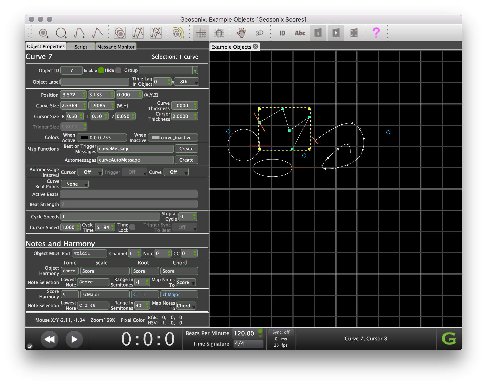

If you have questions or comments contact: geosonix@gmail.com A Geosonix forum will soon be available.
GeoSonix is a graphical open-source music generator, non-traditional sequencer, and live performance environment.
At right are few of the many sample scores included with Geosonix.
Fast Tour of Geosonix:
GX2 is compatible with Mac OS X 10.6+ or higher (and in the future, Windows 7 though 10).
To install on a Mac:
The Geosonix User Interface is much like other desktop applications:
The Workspace is a 2D or 3D arrangment of the objects such as curves, cursors and triggers in the graphical view of the score application. The score file contains a snapshot of the objects and their properties that were in the graphical view when the score file was last saved.
The Script is Javascript code in the script tab of the property inspector. A script can consist few or many lines of code which may include few or many function definitions - almost any type of Javascript code. The Script tab is not only a place to see scripts - it’s a syntax highlighting code editor. In the Script editor you can execute all or any part of the script. When you execute script code you will immediately see the results, possibly in the graphics view, or as response text below the editor.
Geosonix Score Files:
Messages: Messages are generated by interactions among graphical objects. For example a cursor colliding with triggers can generate messages based on features like the location of the collision, which objects participated in the collision, the time of the collision, and the colors of the image pixel behind the collision point. Typical MIDI messages would be note-ons and note-offs, bend and continuous controllers. A typical OSC message may include score parameters such as the score time and the x, y, and z coordinates of a moving cursor.
Generating Sound: Geosonix does not generate sound. Its messages are designed to trigger sound or effects in other audio applications or synthesizers. Message values such as MIDI note numbers, velocities and durations may be generated as a function of the parameters of the “score context” at the exact moment the message is generated. This provides an extremely rich source of sound patterns that you are unlikely to hear from any conventional sequencer. You define the messages and what aspects the score context they depend on, mapped using Javascript functions and code, and route them to an external music environment or synthesizer to generate sound.
The GeoSonix Scripting Language: The scripting language is standard Javascript and includes large number of predefined functions and objects with which you can define the messages sent by objects, customize object behavior, and modify or build scores. The advantage of using a script to build a score is that you can automate steps that would be tedious by hand, difficult to coordinate the relationships between the parts, or build different versions based on changes in a few parameters. You can parameterize scripts so that you can easily explore variations on an idea without having to make careful manual modifications to copies of scores.
Messages Are Javascript Functions: You can build almost all of a score without scripting, but a script functions must be used to define object messages. Messages are the way that objects make anything happen, musically such as playing notes, or graphically such as changing or moving other objects. One of the properties of an object is the name of a Javascript function that it calls when it’s triggered to send a message. Message functions are defined just like other Javascript functions in the script buffer with normal syntax (unlike GX1 which had a custom language for defining messages).
A advantage of messages as functions is that they can related to one or more objects by being named in each object as its message function. Multiple objects can share the same function making it much easier than in GX1 (and Iannix) to maintain consistent object behavior, and much easier to edit message functions while the score is playing, for example as way of experimenting with ideas and as a performance technique.
Another advantage of messages being real Javascript is that they can do far more, far more easily - almost anything you can do in Javascript. Yet another advantage of the new design is that all messages share the same execution environment, and the same environment as the script that may have built the score, opening up the potential for interaction among them that was exxtrememly difficult or impossible in GX1. For example the message of one object can access or alter properties of other objects, or alter shared properties that alter the behavior of an entire group of objects.
The Script Editor: The editor is a syntax highlighting Javascript editor that is tightly integrated into the rest of Geosonix. It’s also what programmers would call a REPL: A read-evaluate-print-loop. This is a place where a you can type Geosonix commands, evaluate them, and immediately see any text output printed in a scrollable area below the editor.
You don’t have to execute all the script code every time. It can be executed a line at a time, a range of selected code, any single function, or the entire script. here are buttons just below the editor to execute these types of code blocks and keyboard shortcuts to quickly execute code as you write it. Button names include reminders of the keyboard shortcuts. The script is also auto executed when a score file is loaded.
The editor a great way to learn scripting or explore new Geosonix commands because evaluating a command will also immediately affect the score itself. You can enter commands and execute them one at a time, and immediately see the results. For example if you type a command to add or delete an object and execute that line, the object will instantly appear in the Score.
If you execute a command to print some object property the result will appear as as text in the output buffer below the script editor. Also, if you add a line to a message function, when the score plays the function will print the value of the property in the output area each time the object is Triggered. This is very useful for testing.
Another advantage of the REPL is that one or a more lines of script can be written and executed repeatedly to do complex things that would be a lot of work to do manually. If you have created useful fragments of script, they get saved with the score file and are available next time you open the score. The REPL is also great for debugging. Having live script editing with all of Javascript and all Geosonix objects and scripting commands at your fingertips allows you to enter diagnostics such as print statements to write intermediate results to the output buffer to see what’s happening, and immediately change it as needed. In the future a complete Javascript debugger may be available.
Finally, the REPL can allow Geosonix to be used as a live performance or “Live Coding” performance environment. For more on Live Coding look it up in Wikipedia or see the Toplap web site.
Geosonix Scores as Performance Instruments: A Geosonix score is not just something where you press the play button and passively listen. You can alter scores as they play through the Geosonix user interface or though through external MIDI or OSC controllers such as Leap Motion, Microsoft Kinect, Monome, Ableton Push and many others. The output of a score may sound rich and complex, but it’s completely deterministic to its layout and inputs, and varying the inputs in real time can instantly vary the outputs in very interesting ways, not unlike playing a convertional musical instrument. You can in effect treat any given score as an instrument and with a little practise “play” or improvise on it for fun or in a performance.

Features of the Geosonix window, starting at the upper left and moving clockwise:
The Main Workspace below the toolbar on the right: Where you view, add, and interact with score objects. The workspace has a coordinate system and normally appears 2D but in fact is 3D. You can rotate it to see its three dimensional nature if you click on the 3D button in the toolbar and drag on the score background. You can rotate it in 3D. Double click on the background to return to a flat view and click the 3D button again to turn off 3D rotation mode. In fact you can do most of what’s interesting in Geosonix just working in 2 dimensions but the 3D nature of the workspace is there if you need it.
The above image shows three Triggers, four Curves and four Cursors, one on each curve. One of the curves is selected, which can be seen from the yellow marquee around it.
There are tabs at the top of the Main Workspace, one tab for each score that is currently open. Multiple scores can be open and do not interact in any way. They have private versions of almost all score parameters, the score objects are separate, and each has its own Javascript environment. Only one score can be playing at a time, and if you switch tabs the score you left stops playing but retains all its information so it resumes in the same place if you press Play when you switch back to that tab.The Inspector occupies the left side of the Geosonix window. See below for a detailed description of the Inspector.
The Menu Bar on a Macintosh is:

In addition to the Geosonix app menu there is a File menu and Edit menu which are similar to those of many other applications you will have used and will be mostly self explanatory. The File menu also includes commands for loading an image file as a background image for the score, clearing the background image, and opening the default folder where score files are stored on your system. The File menu also includes a command to open the Patchbay, which is discussed below.
The Edit menu includes a command that copies the Javascript code to clipboard that would be required to reconstruct the object or objects selected in the score. If you paste this in the script editor it will be useful in understanding the necessary commands to create an object and set its non default properties. However this feature is a work in progress so you may find not all necessary commands are created, or the commands that are created are redundant. This will be improved in the future.
The Display and Playback menus mostly duplicate toolbar buttons or transport buttons so you will rarely use them. The equivalent commands will be discussed in the toolbar and transport documentation. You may find it useful to look in these menus for reminder of the keyboard shortcuts of some useful commands. They are:
All these commands require the input focus to be on the score view, not the property inspector or script editor, otherwise they would be taken as text input. If necessary click on the score background or some object in the score to set the input focus to the score.

The Patchbay can be opened from the File Edit-Patchbay menu. It allows you to map the virtual port names, such as vMidi1 used in messages to actual ports on your system. This allows you to change the MIDI or OSC address where a score’s messages are sent without without having to edit all messages in the score. It also lets you write scores that can be reused with different synths or on different system without having to change to the script. There is more about the Patchbay in section on scripting.
Scores are made up of three types of objects that can be added to the main workspace with toolbar buttons or with scripting commands. Every score object is assigned a unique id when it is created, integers ranging from 1 to 32767. IDs are not usually needed when creating scores with toolbar tools as IDs are assigned antomatically. However IDs are the way you uniquely refer to objects in scripts.

Examples of Four Curves, Four Cursors and Three Triggers:
Curves are lines in 2D or 3D space which can be circles, ellipses, curves made of straight line segments, curves made of curved segments (Bezier curves), and freeform curves. Curves may also have Beat Points defined on them which are shown as small tick marks across the curve. See the rightmost curve in the image below. When the curve’s cursor collides with a beat points it triggers the curve’s message function. Beat points may defined to be be at regular intervals along the curve or in patterns causing messages to be triggered at rhythmic intervals (e.g. Euclidean rhythms) as the cursor moves over them at a steady rate.
Cursors are straight line segments attached to and perpendicular their curve. Cursors move along their curve, usually at a steady rate, when the score is played. Their velocity is propertional to the speed the score is playing based on a multiplier which is a property of that cursor. The cursor speed property can be used to mek it move faster or slower than the rate set by the score. A cursor on a curve with beat points is assigned a note type that defines its speed with respect to the score speed in beats per minute. For example if a quarter-note is assigned the cursor will encounter its curve’s beat points at the rate of quarter notes in terms of the master transport beats per minute. A curve can have only one cursor. (This may be increased in the future).
Triggers are points in 2D or 3D space usually shown on the score as a small blue circle centered on the point although the appearance can be redefined. The most basic use of triggers is that they can trigger messages when collided with by a cursor. Unlike curve beat points which can only be triggered by that curve’s cursors, triggers can be triggered by a cursor of any curve. Triggers can also be “snapped” onto the beat points of a curve allowing them to be dragged or reshaped as a group by dragging or reshaping the curve. However even when snapped to some curve, triggers can still be triggered by collisions from the cursors of any curve.
Note that in Geosonix we use the term “trigger” in two ways. First, a Trigger is a type of score object. Second, we say that some object has been triggered when some event has caused its message function to be called. In this sense any object can be triggered. For example when when a cursor collides with a curve beat point, or when any type of object calls its AutoMessage function, we also say it has been triggered.
The Inspector has three tabbed panels:
The Object Properties Tab for viewing and editing the properties of score objects. The top part of the Property Inspector varies depending on the type of object currently selected: Trigger, Cursor or Curve. All fields are visible all the time, but fields that are not relevant to any selected object are greyed out and cannot be edited.
Note that it is usually advisable to ensure that only one type of object is selected at a time when properties are being edited. If necessary this can be accomplished using the selection filtering tools in the toolbar.
The bottom part of the Object Properties tab which is separated by some space from the top section is for editing note and harmony properties that either apply to the entire score or are the same for all types of objects. This section is the same no matter which type of objects are selected in the score.
See below for more details on the Object Properties tab.The Message Monitor Tab for real time monitoring of MIDI and OSC messages sent and received by Geosonix.
All property fields for all types of objects are always visible in the Properties Tab and always stay in the same place. Fields not applicable to any objects selected in the score are inactive and greyed. Once you learn what a field does and where it is you can count on it being where you remember, and if it’s not greyed you know it’s applicable to some selected object.
Having all the fields always visible is also very convenient when you are experimenting, improvising or performing with playing scores. Everything you need (except for the script editor which is in the next tab) is at your fingertips in the properties tab.
I’ve tried hard to give the fields titles that are self explanatory, and all fields have ToolTips with more information. You should be able to quickly get to the stage where you almost never need to refer to the documentation.
The fields are organized into related groups separated by horizontal dividers.
The top of the Object Properties Tab shows the type of object or objects selected in the score and the id of what we call the Focus Object. If you’ve only selected one object then this is the Focus Object. If you’ve selected multiple objects then the Focus Object is the first one you selected.
The Object Properties dialog shows just the properties of the Focus Object even if multiple objects are selected. However any property fields relevant to any type of selected object are active (ungreyed). If you change some property it’s applied to all selected objects that support that property. When editing properties be careful to only have selected objects that you really want to change, although you can back out of undesired changes with undo. To use undo on score objects, the focus cannot be on the property inspector. Click on the score background before trying to undoing (or redoing) property edits.
In most cases when changing properties it’s a good idea to have either a single object selected, or only one type of object selected at a time (e.g. just triggers or just curves). However there are legitimate reasons to select a mixture of object types to set some property such as when you want to assign them all to the same group, or give them all the same color.
At the top of the property inspector are counts of the number of currently selected objects or each type. This can be useful in confirming what’s in the selection.

When a Trigger is selected in the score you can edit trigger properties in top part of the Property Inspector tab. These include:
Properties of All Objects
Trigger Position and Appearance Properties
Trigger Message Functions
Trigger Automessage Interval
Trigger Sync to Beat

Properties of All Objects
Curve Position and Appearance Properties
Curve Message Functions
Curve Automessage Interval
Curve Beat Point Properties
Cursor Motion Properties
These cursor properties are enabled when a cursor’s curve is selected because it’s often easier to select a curve than a moving cursor.
For all these see Time, Durations and Speeds.

Properties of All Objects
Cursor Position and Appearance Properties
Cursor Message Functions
Cursor Automessage Interval
Cursor Motion Properties
For all these see Time, Durations and Speeds.

The bottom of the Object Properties tab shows Note and Harmony properties for the entire score and is visible even if no objects are selected. When an object is selected in the graphics view, the note harmony properties for that object are revealed above the score properties.
The names of the properties for the score and all objects are the same. They are the Tonic and Scale Name of the current scale, and the Root and Chord Name of the current chord. Below these is the range of notes to generate in terms of the Lowest Note and size of the Range in Semitones. There is also the “Map Notes To” property (called mapNotesTo in scripting) which determines whether note mapping should be into notes from the current scale or the current chord. All notes that are in the chord/scale, and that fall anywhere in the Range in Semitones, are available for mapping. i.e. If the range is more than an octave the chord or scale will be repeated as needed up to the top of the range.
By default objects inherit the equivalent score properties. This can be overridden for any object and any property. i.e. If an object’s message function uses an Object Harmony property that reads “Score” in the Property Inspector (or -1 in the case of Range), then the value of that property for Score Harmony is returned. All object harmony properties default to “Score”, so by default objects generate notes and harmony compatible with the score and with each other. In effect, this means that objects inherit the harmony properties of the score.
You can override the score properties for one or more objects by entering one or more specfic harmony properties. A use might be to force some objects to play different ranges of notes from others. Or you may set some objects to play chords and others to play notes from a scale compatible with the chords as is done in jazz improvisation.
See The Harmony Processor for information on using all these fields to control harmony.
At the bottom of the Properties Tab are some fields with some useful general information:
This information can be helpful in writing message functions and understanding how message functions respond to the score.

The script editor is in the Script tab of the property inspector. The main parts of the editor are:
Lines of the script that are too wide are wrapped to multiple lines. At the end of each wrapped lines is an arrow symbol showing that it continues on the next line. Even when a line of code has wrapped it’s still treated as a single line in Javascript.
The graphical workspace shrinks as the inspector is widened but all objects in the view also shrink to remain visible and in proportion. Depending on what you are doing you may want to work with the editor larger and the view smaller, or adjust the boundary as needed while you work.

This tab is where you can see MIDI or OSC messages that have been sent and received by Geosonix.
Note that by default message monitoring is turned off as it adds an significant load to your system. Therefore turn on monitoring with the Enable Logging checkbox when you need to see the flow of messages and be sure to turn it off again when you no longer need it.
Both lists scroll and have a capacity of the most recent 10000 messages. You can clear either list by clicking in the list and selecting all the text with Command + A and pressing the delete key on your keyboard. (When I have time I’ll add a button to clear each list.)
Also, although it’s not related to message monitoring there is a field at the bottom of this tab to set the Open Sound Control input port. This is the port you use to send messages to Geosonix on localhost or to your computer’s IP address over your LAN. If you use OSC you probably already know how to use this, but there will eventually be a tutorial on using OSC with more detail.

The Transport controls starting and stopping the score playing, rewinding, showing the current playing time, setting the playing speed, and synchronizing Geosonix with an external clock using either MIDI Clock or MIDI Time Code. You should find this self explanatory if you’ve any used any other music sequencer or workstation.
Time is measured in beats, and playing speed is measured in beats per minute. Objects have internal rates that are synchronized to the master score rate. There are two ways to synch an cursor’s clock to to the master clock:
If a cursor is on a curve that has not beat points defined, you can set a property called the Cursor Speed, which is a multiplier applied to the master rate. For example a multiplier of 0.5 causes the cursor to move at have the master rate, and a multiplier of 3.5 causes the cursor to move at 3.5 times the master rate. This type of synchronization is mostly useful for non rhythmic or ambient music.
If a cursor is on a curve with beat points defined then you set the rate by specifying the type of note one beat refers to. For example a curve might have 32 beat points, but in one case the cursor could be defined to synched to quarter notes at the master rate, and in another case the cursor might be assigned to by 1/16 notes, causing the cursor to run much faster.
Another type of sync to the transport is AutoMessages which all types of objects can be set to generate. When enabled they are spontaneously generated at a regular interval whenever the score is playing. Similar to curve beat points, the interval for an object’s AutoMessage is set as a note duration such as a quarter note or a sixteenth note triplet.
This design allows objects to generate messages, all synchronized to the master clock even as the master rate changes, and the timing of the beats is synchronized across all objects.
It’s also possible to set any object’s internal timing to lead or lag the master clock by any multiple of a given note type. A simple example would be if you set two objects to generate messages (that play notes) at quarter note intervals, but then set one of them to lag by two quarter note triplets. This in effect gives a swing rhythm.
Many unusual effects are possible by mixing and matching these settings across a number of objects. It’s also possible to change any of these settings on the fly either manually or based on varying score properties as the score plays, and the results can be very interesting!

From left to right the buttons to add objects are:

These are the Filter Selection buttons. There is one for triggers, one for curves and one for cursors. But first an introduction to selecting objects:
When we talk of selecting an object in the score we mean clicking on it or dragging to encompass one or more objects with the selection rectangle. Selected objects are marked with a yellow rectangle that we call the marquee. Of course the reason we want to select an object is that this causes its properties to be visible in the property inspector. You can also mouse-down and drag on one of any number of selected objects, which moves them in the score. There is also a toolbar button that causes only selected object to send messages. More on this below.
You can add to the selection by Command-Clicking on each successive object, or by Command-Dragging to encompass more objects. Shift-Clicking on an object removes it from the selection. You can select all objects in the score by pressing Command+a on the keyboard.
By default all types of objects can be selected. It’s sometimes useful especially when selecting with the marquee to prevent some types of objects from being selected, for example if you just want to move a some triggers, or to rename their message function. Another use is dragging a marquee that selects cursors but not their curves. Selecting specific types of objects is the purpose of the selection filtering toolbar buttons.
By default no selection filtering buttons are pressed and in this mode you can select any type of object (triggers, curves and cursors).
When one or more of the selection filtering buttons are clicked to toggle them down (they become darker), only those types of objects can be selected and others are ignored. For example if you click the button with a picture of a trigger on it, only triggers can be selected. You can even use the Command+a shortcut to select all object in the score and in this case just triggers will be selected.
To return to being able to select all types of object, click on any “pressed” (darkened) buttons to toggle them off.

The Play Selected button is normally not pressed. When you click it to toggle it down, only selected objects are able to send messages of any kind. If a score is playing and you click this button with no objects selected the score will stop sending notes or any other type of MIDI or OSC messages. If you select some object it will be able send messages and you will hear it, assuming that its messages are sending MIDI notes. Any number of objects can be selected in this mode and all selected objects will be able to send messages and the others will be muted.
You will find the Play Selected button very useful for understanding what scores are doing. It can also be used in performance or improvisation. For example you may create a score where multiple objects would be sending messages, but then only play one or a few of them at a time in various groups to achieve variations in the performance.

The Grid Tool contains the image of a grid. Click on it to hide the grid. Click it again to reveal it.
You can also change the grid spacing with the Grid setup command in the Display menu. For historical reasons the units of grid spacing are time with the default spacing being “1 second”. Time time does not have a lot of meaning in the current version of Geosonix, but you can still use the commands to adjust the relative spacing. For example choose “500” milliseconds to have a spacing twice as close as the default.
The Snap to Grid Tool enables snap to grid mode where the mouse operations on objects are constrained to conform to be aligned to the grid. Click on the grid tool to exit snap to grid mode. You can tell you are in snap to grid mode when the button appears pressed (darker).

The Pan Tool looks like a hand. Clicking the Hand Tool allows you to pan the score left/right and up/down in the view by dragging with the mouse anywhere in the score. Click the Hand Tool again to return to normal mouse operations on the score.
Using the Hand Tool is equivalent to holding down the Shift key and dragging with the mouse.
The 3D Rotate Tool which contains “3D”, allows you to rotate the score about the x axis and y axis to see the score tilted into the z dimension. Drag up/down to rotate about the x axis and dragging left/right to rotate about the y axis. While in this mode you can return the view to flat by double clicking on the score background.
Using the 3D Rotate Tool is equivalent to holding down the Command+Shift keys and dragging with the mouse. As with the tool you can restore the view to flat Command+Shift double click on the score background.
Note that while the is not flat you cannot select or drag object in the score. This means that having the view rotated is mainly for viewing and not for interacting with. Possilbly 3D interaction will be added in a future version of Geoxsonix.

The icon of the Object ID Tool is “ID”. Clicking on it shows tags above each object with the ID of the object. The IDs are displayed in the color of the object. Click the button again to hide the IDs.
The icon of the Text Labels Tool icon is “Abc”. Click on it to reveal the text label (if any) above each object in the score. Labels are displayed in the color of the object. Click again to hide the labels. By default no objects have labels so you will only see labels if you have added them with the Object Label field in the property inspector, or with a script.
It can be very useful to assign labels in the script especially for information that changes in message functions or script callbacks from Geosonix. For example the following is a trigger message function that sends a note when a cursor collides with the trigger. The line “this.label = note” inserts the note number in the label:
function triggerMessage() { note =mapHarmony(this.x,-16,16); //note number from x position vel = map(this.y,-12,12,20,127); //velocity from y position dur = map(this.cursor.angle,0,360,50,2500); //duration from this.label = note; //put note number in label midi.note(this.port,this.channel,note,vel,dur) }
Clicking the Text Labels button would now show above each trigger the trigger’s most recently sent MIDI note number.
 The number is automatically converted to text. The labels will automatically show the number of the most recent note sent by each object. Here is how this would look in the score:
The number is automatically converted to text. The labels will automatically show the number of the most recent note sent by each object. Here is how this would look in the score:


setBPM(bpm);Sets the global speed of the score in beats per minute. It some time has elapsed on the transport, it’s possible to enter aa negative score speed which will cause time (and all score activity) to run in reverse. When running in reverse the transport will stop when the time reaches zero. It’s not possible for time to become negative.
The score speed is combined with the speed factor or duration parameter of each cursor to determine the speed, or more intuitively the transit time of the cursor on its curve. If the cursor speed was specified in terms of a note duration per beat (if on a beat curve) then those beats are synched to the master transport. If the cursor is on a curve without beat points then its speed is specified as a multiplier times the master rate, or as a duration to travel around the curve.
Example:
setBPM(120);setSpeedMultiplier(objectID, localSpeed);This is how cursor speed is specified if it’s not on a curve with beat points.
Cursors have a speed independent of each other, but that is related to the global speed. The cursor can move in the negative direction if the its speed factor is negative (and the global speed is positive).
Cursor speed is best understood by thinking in terms of the time duration required for a given cursor to traverse its path one time. If the master speed of the transport is set to 1.0 (with the “setScoreSpeed” command or the transport slider), and a cursor’s time is set to say 10.0 seconds, the cursor will take 10 seconds to traverse the curve once. Doubling the master speed to 2 would cut the transit time of this cursor to 5.0 seconds.Thus each cursor can have it’s own transit time (or inversely, speed), proportional to the master speed of the score.
This example sets the speed of cursor 9 to be five times the global speed.
setSpeedMultiplier(9,5);setDuration(objectID, durationInSeconds);SetDuration automatically sets the speed of a cursor so that it will traverse its curve once in the specified amount of time. This command also automatically causes the LockDuration option to be set, which maintains the given duration even if the curve is resized by dragging its points with the mouse or with the resize command. This makes it easier for you to create scores that maintain the timing relationship between cursors on different curves even when you adjust the shape of the curves. Note that if you need to clear the LockDuration at any time, this can be done with the checkbox in the inspector, and is also automatically cleared if a different speed is directly entered into the Inspector.
This example sets the cursor 99 to traverse its curve in 23 seconds:
setDuration(99, 23);setPattern(objectID, patternString);This parameter is text string that is a list of numbers where each successive number provides a speed multiplier each successive cycle. (First number = first cycle, second number = second cycle, etc.)
As the number cycles exceeds the length of the list, the list is cycled to continue to supply numbers. For example the list “1 -1” would provide a factors of 1, -1, 1 -1 in successsion.
The following example sets cursor 99 with a pattern that causes the cursor to run one cycle at the normal speed, one at 0.7 times the speed, one loop at 0.5 times the speed, one loop at 0.3 times the speed, then cycling back to 1 … if needed:
setPattern(99, "1 0.7 0.5 0.3");The Cycles field to the right of the Cycle Speeds field in the Inspector allows you to set how many times a cursor should loop before stopping. A value of -1 causes the cursor to run without stopping. Any other number in the range 1 .. 9999 set a limit. For example a value of 1 will cause the cursor to cycle once and stop. If there were more than one speed defined in the Cycles Speeds field, only the first would be used.
Geosonix can be synced to a master using MIDI Clock. Click on the “Slave” menu button next to the beats per minute display. There are options to Sync to MIDI Clock and to disable sync. Geosonix automatically adjusts its internal clock even as the tempo changes. Song position pointer is also accepted so for hosts the support it Geosonix rewinds and repositions the transport based on changes in the host.
When Geosonix is synced its transport controls are locked. Tempo must be set on the host and the host transport must be used for start, stop and rewind.
Use methods on the predefined midi Javascript object to send midi messages. Here is a simple script that might be used in a message function to send a midi note:
note = 60;
velocity = 100;
duration = 1000;
midi.note(this.port,this.channel,note,velocity,duration); //Sends the message`This can be shortened as:
midi.note(this.port,this.channel,60,100,1000);The arguments this.port and this.channel refer to the port and channel properties (in the property inspector) set for “this” object. By default this.port has the value “vMidi1” and this.channel has the value 1. You could also have entered the port and channel as their literal values as in the examples below.
The port property defaults to “vMidi1” which is the name of the first of the four virtual midi ports than can be defined in the patchbay. To see the Patchbay use the File-Edit Patchbay menu. In the patchbay you can define which midi ports on your system is sent to by each of the four available virtual midi ports vMidi1….vMidi4.
Here is an example of a midi message that sends pitch bend. It would bend all notes played on channel 1 of the port “vMidi1” slightly upward (sharp):
midi.bend01("vMidi1", 1, 1.1); //The 1.1 is the bend. A bend of 1.0 would be no bend.Here is another example that sends a pitch bend message, bending notes played on channel 1 as far as possible downward:
midi.bend01("vMidi1", 1, -1.0);Most often midi messages are used in message functions as the way the function sends a MIDI message. However they can be used outside of functions. For example you might define this message somewhere in a script:
midi.cc("vMidi1", 1, 1, 127);Whenever executed as a single line with Command+. this will send a midi cc 1 (mod wheel) with value 127 to channel 1 on port “vMidi1. This can be useful as a way to send a specific controller to a synth to accomplish a”MIDI learn“. In this case if the synth were put into learn mode on some parameter, say a VCO level, then when this message is sent the mod wheel controller would be assigned to that parameter.
Another useful one might be:
midi.cc("vMidi1", 1, 123, 0);… which sends an All Notes Off message when this line is executed.
There are predefined functions for sending every type of MIDI message. See any of midi.note, midi.noteOn, midi.cc, midi.cc01, midi.bend, midi.bend01, midi.programchange, midi.channelpressure, midi.channelpressure01, midi.aftertouch, midi.aftertouch01 and midi.system in the function reference.
See the scripts of of the sample scores for more examples of sending MIDI messages.

Message functions are how the rhythm processor makes anything happen such as sending MIDI notes, sending MIDI controllers or anything else. In fact message functions can do a lot which is not really related to rhythm but we document them here because this is their most important use.
There are several ways objects can create “beats”, but when any beat happens, one of the object’s message functions is called in the script, if that function exists (otherwise nothing happens). What the function does can be anything you can do with Javascript and Geosonix commands. Often it sends a MIDI (or OSC) message with values mapped from on the state of the object and/or score at the moment the beat was triggered.
A new score’s script contains no message functions. An object might create beats in this state but nothing will happen until a message function has been defined in the script with a name that matches the message name in the object generating the messages.
The property inspector has places for the names of two types of message functions, one for beat or trigger messages and another for “automessages”. There are places for both so that both types of messages can be being used at the same time with functions that do different things.
These are the main things that make objects call message functions:
There are two fields (see above image) to define message function names:
The above image happens to show the message function names for a trigger, but each type of object prefixes its message functions with its type.
There are also two buttons next to the function names that show that function in the script, and offer to create a function if non exists yet:
The auto-created funtions are quite versatile. They normally generate MIDI note messages based on the position of the object, but if an image has been added to the score background they use the colors in the image to generate the notes. Also, if you change the Object MIDI Port or Channel the message function uses the new settings, and if you enter a non zero note into the note field the message sends only that note, which is useful for drum programming.
A very important feature of message functions is that objects can share them. In fact by default all triggers call a function named triggerMessage when a cursor collides with them and a function called triggerAutoMessage for automessages. All curves call curveMessage when their cursor collides with a beat point, and so on. This is convenient because you often want all objects of a given type to do the same thing, and if you want to change what all objects of that type do, you only need to change one function.
However you are free to give some object or objects any message functions name you want and as long as you define a function with that name in the script those object will call it. This allows some objects to one thing and others to do something different.
Functions created with the Create button are versatile enough that you could create scores entirely without scripting. They send MIDI messages that vary based on the position of the object in the score, but if there is a background image they automatically switch to creating MIDI messages based on the colors in the image. Also they normally generate note pitches matching the current score harmony, based either on object position or background color. However if you set a non zero note number in the MIDI Object Note field the object automatically switches to sending that that note. This could be used, for example, to have each object send a different note number to a drum synthesizer, triggering different percussion instruments.
You can also use auto-created functions as a starting point for your own functions. You should be quickly able to learn to tweak the mappings in small but significant ways. As you learn more you will be able to be more adventurous in your changes, working up to creating your own functions.
See The Structure of Message Functions for a better understanding of how message functions work.

Each type of object has an Automessage Interval field to define how frequently it sends automessages. They can also be turned off which is the default.
The Automessage Interval is the interval between calls to an object’s auto message function. Calls to the function also only occur when the transport is running. Choose the interval from the popup menu, for the appropriate type of object, which are only enabled if that type of object is selected in the score. Values can range from a 384th note up to four whole notes.
Defining the interval in terms of a note length allows the message rate to vary with the speed the transport is running. Remember that these messages are sent by calling a function in your script with the same name as defined in the Automessages property field for this object. No messages will be sent if this function does not exist or has a different name.
Intervals as short as a 384th note may seem excessively short but they are useful if the beats are trigging the sending of a MIDI continuous controller or an OSC message in which case you may want very frequent messages to simulate smoothly changing values.
Note that although basic automessages are sent at regular intervals it can be very interesting to script automessage intervals to change as the score plays. For an example open and play the score “Varying Intervals for AutoMessage Improvisation.score”. Unique rhythm textures can be automatically generated.


Beat Points which look like small tick marks can be added to a curve with the “Curve Beat Points” drop down menu button in the property inspector. See right.
The menu contains three options:
If Normal or Euclidean are chosen then the cursor speed is synced to the transport speed so that the beats are synced to the master BPM. Use the Beats/Cycle field to enter the number of beat points to place on the curve. Use the Beat Interval control to choose the length of a beat from a dropdown menu with note types ranging from a 384th note to four whole notes.
There are two other cursor settings that are available no matter which beat point option is chosen:
Beat points can be used for a number of things:
If a message function is defined for a curve, the message is sent each time a cursor crosses an active beat point, similar to a cursor colliding with a trigger. However the beats are synchronized to the transport and thus to the beats of other objects. For more details on active and inactive beat points, see below.
In curve a message function called by a beat point event you can get the number of the beat point with the “this.beatNumber” property. You can also get the total number of beat points with the “this.nBeats” property. This allows you to use a cursor’s motion along a curve to perform all sorts of sequential actions synched to the transport. The actions may be slow or fast depending on the speed of the cursor.
An important example of this is using a slowly moving cursor to step a score through chord changes, where the a given sequence of chords and chord root notes are stored in an array indexed by the beat number. There are several examples of this in the sample scores. For example see the score called “Chord Changer.score”.
Triggers can be dragged and dropped onto beat points and they remain attached to the curve even if it is dragged, resized or reshaped. Triggers that are snapped to curves act like normal triggers in other respects in that they can have messages that are sent when they are collided with by any cursor, either a cursor on their curve or a cursor on some other curve. Snapping triggers onto curves can provide a useful way of moving them around as a group or arranging them in patterns.
The Active Beats Field is used to specify which beat marks on the curve actually trigger messages. Typical usage is to specify a usually number of beat points (say 32) and then mark some of them as active in a pattern to create a rhythm. Details:
Enter active beats as an “x” and inactive beats as a period “.” for inactive beats, with no spaces between them. For example “x.x.” sets every second beat active. If you specified bar lines (i.e. “b 16 4”) then vertical lines are automatically entered into the active beat display at that interval. For example if the beats are “b 16 4” and you enter “.x…x..x…x..x” as active beats, when you press the “Save Changes” button, the Active Beats field will display “.x..|.x..|x…|x..x|”
The on-curve tick marks of active beats are identifiable as being slightly thicker and longer than normal tick marks.
See setActiveBeats for the scripting command to set this property.
The Beat Strength Field is used to modify the velocity of midi notes produced by active beats according to some repeating pattern.
For example suppose the curve has eight beat points and the active beats pattern is “xx.xx.xx”. So there are eight beats and all are active except for beats 3 and 6. If you enter “9868” into the Beat Emphasis field the first beat will be sent a triggered value 127, the next will be sent a value of ((8/9)127), the third will not be sent because it is not active, the fourth will be sent as ((6/9)127), etc.
See setBeatEmphasis for the scripting commands to set this property.

You can set the time in an object to be delayed with respect to the score time on the transport. This affects the start time of the object’s automessages and beat point messages, lagging their onset with respect to other objects in the score.
The object’s events will occur later than would normally have been set by the master transport.
The fields for time lag are:
Among the uses for time lag are:
Delaying when an object starts sending messages. Time lag can be up to 9999 times four whole notes so the delay can be very long if needed.
The scripting commands to set time lag are setTimeLagMultiplier and setTimeLagNoteTicks.
Sometimes it is useful to attach triggers to the beat points on a curve. In the score this is possible dragging and dropping them on a beat point. It is also possible to attach trigger to beat points with a script.
Scripting command:
setBeatTrigger(triggerId, curveId, beatPoint);Sets the trigger with ID triggerID to the curve with ID curveID. The argument beatPoint give the number of the point to which it should be attached. The first point on the curve is numbered 0. Example:
setBeatTrigger(12, 99, 5);Attaches trigger number 12 to point number 5 of curve number 99.
For a fun example of triggers snapped to a moving curve see the sample score “Pulsating Ellipse with Triggers.score”.
 The this.port and this.channel in the messages of most sample scores refer to the “port” and “channel” fields in the property inspector (above). They enable you to write more versatile message functions by allowing different objects to use the same message function but, for example, send on different channels.
The this.port and this.channel in the messages of most sample scores refer to the “port” and “channel” fields in the property inspector (above). They enable you to write more versatile message functions by allowing different objects to use the same message function but, for example, send on different channels.
Similarly if you use this.port in a message function you can change the midi port it’s sending on without having to edit the message function. You could redirect that object’s messages to a synth on a different port simply by changing what’s in the Port in the property sheet, say from “vMidi1” to “vMidi3”. Other objects using that function would still be using it to send to “vMidi1”.
You could also use “this.note” in place of “note” in a message function and it would switch to sending just the particular note number set in the Note field of the property sheet. This can be very useful in drum machine programming where a particular note number is a particular percucussion sound. So you could write one message function that sends percussion beats and then customize what sound it makes when called, say by different triggers, by setting a different note number in the note field of each trigger.
See Define a Pattern of Speeds for Successive Cycles of a Cursor.
This is a simple message function:
function triggerMessage() {
note = mapHarmony(this.cursor.x,-4,4);
velocity = map(this.cursor.x,-4,4,50,127);
duration = map(this.cursor.y,-4,4,100,400);
midi.note(this.port,this.channel,note,velocity,duration)
}This is a function that is called whenever a cursor collides with any trigger that has “triggerMessage” defined as the name of its message function. Each time it’s called it uses this.cursor.x to fetch the x position of the cursor when it collided with the trigger and uses it in the mapHarmony function to convert the position (assumed to be in the range -4 .. 4) in the mapHarmony function to get a note compatible with the currently defined score harmony. For more on how harmony works see The Harmony Processor.
In Javascript we use the “.” (dot) operator to refer a property (or method) of a object. The “this” keyword in a message function always refers to the Geosonix score object that called the function, in this case a trigger. Then using the dot operator “this.cursor” refers to the cursor that collided with the trigger this time, and the “this.cursor.x” gets the x position of the cursor. This position is then used as the first argument in mapHarmony and determines the position of the generated note within the current note range for the score, or for this object if it has a custom range defined.
Then the note velocity is determined, also based on the cursor x position using the “map” function to scale it from the range of -4 .. 4 to a range of 50 .. 127. If the x position were exactly -4 the velocity would be mapped to 50 (fairly quiet) and if the x position were 4 it would be mapped to 127 (fully loud). Intermediate values are proportionally mapped in between.
Then the note duration is determined by mapping the cursor y position (this.cursor.y) to a range of 100 to 400 milliseconds.
Finally a midi note is sent using the midi.note function.
The Javascript experts among you may be thinking that it wasn’t necessary to assign each part of the message to variables and then use the variables in the midi.note function. It would have been possible to omit the variables and write this as one big complicated statement. However, the clarity gained from this is worth the small processing cost.
For the even more expert among you, you may be thinking that we should declare the variables as local by putting “var” in front of each. (Because otherwise they become global, and bad things will happen!) However, it’s reasonably safe to do this here as long as we are consistent in always giving these helper variables the same name, and know never to use them for anything else. They get redefined every time a message function uses them so there isn’t much likelihood of cross contamination. I omitted the “var” here because I’ve tried to make the standard functions as uncluttered as possible.
Sometimes you need to do something in a message function the first time an object sends a message and never again. Or, sometimes you need to do something each time a cursor starts on a new cycle around its curve. You can use the following special object properties in message functions to detect these states:
For an example of using these flags with every possible type of message see sample score “Example of firstMessage and repeatMessage.score”.
Here is an example of one of the message functions from this example script:
function cursorAutoMessage() {
if (this.firstMessage)
print("cursorAutoMessage firstMessage", this.id);
else if (this.repeatMessage)
print("cursorAutoMessage repeatMessage", this.id);
note = 40;
velocity = 100;
duration = 100;
print("cursor autoMessage note-on", this.id);
midi.note(port,channel,note,velocity,duration);
}Above you can see that this.firstMessage and this.repeatMessage are being used in “if” statements to carry out actions that will only happen under those conditions. The code in the if statements will be ignored otherwise leaving the message function able to perform its normal actions.
At the heart of the harmony processor is a user interface to set a range of harmony-related properties globally for a score, and for objects to inherit them, but with the ability to override some or all score properties selectively in any object. The property system is then integrated into the Javascript environment allowing all sorts in interesting harmony generation and manipulation, developed purely in Javascript, also having access to properties from rhythm processor, and having final control of MIDI note and controller generation.
Score Harmony 
Object Harmony 
The score and every object have an identical set of harmony properties:
By default all objects inherit each of these properties from the score. You can selectively give any objects their own values that will be used in place of the score settings. The above images show the default values for all the properties. Notice that the default values for all Object Harmony properties are “Score”, or -1 for the Range property. These values cause inheritance from the score.
If you change any object property to something other than the default, the new value is used for that property for that object when it generates notes. Most importantly this happens in the mapHarmony script function which is used to generate notes matching a harmony from the instantaneous score state.
If you stay with using the property inspector user interface and auto-created object message functions which use mapHarmony, then the above is allmost all you need to know to do a lot of interesting work with the harmony system. As you become more proficient at tweaking the auto-generated message function and eventually creating your own you will want to know more about how the harmony system is used in scripting. For this, see The mapHarmony Function and other sections following.
The above images show the harmony properties user interface. The fields are mostly popup lists from which you can choose values for each property. Open Geosonix and click on each of the fields in the Score Harmony section. You will the following options are available:
Score Tonic: The note names C, Db, D, …. , B, Bb. If you need a # note use the flat equivalent. e.g. C# is the same as Db.
Score Scale: A large number of predefined scales are available. The names start with “sc”, as in scMajor so the scipting autocomplete system will display all scales when you type “sc”, and to distinguish the scale scMajor from the chord chMajor.
Score Root: A list of the 12 note names starting at the currently chosen Tonic note. The scale degrees are also shown, and the notes that are in the currently chosen scale are highlighted in the list. You can choose any note even if it’s not in the scale
Score Chord: A large number of predefined chords. These names start with “ch”. The chords that have all their notes in the currently chosen scale are highlighted. You are free to choose any chord, but those that are fully contained in the current scale would be most harmonious with it.
Lowest Note: A list of all 127 possible MIDI note names also showing their octave and note number.
Range in Semitones: Any number from 0 to 127 can be entered. The spin box buttons step the value up or down an octave at a time.
Map Notes To: Determines whether note mapping should into notes from the current scale or the current chord (and repeated over a range specified by Lowest Note and Size of the Range). It determines the set of notes from which the mapHarmony() scripting function should chose notes. This functions is used to generate notes in all the default message functions.
Create a blank score and add any object (e.g. a trigger) to the score and select it. This will reveal the Object Harmony properties for that object. Browse these fields.
You will see that the available values are the same as for the score, but if you look carefully you will see the word “Score” at the top of each list, and the value for “Range” is -1. These mean that the object inherits that value from the score. If you choose any other value for any of the properties, note mapping for this object will use those properaties instead of those score properties.
For example you could define an object to have a lower “Lowest Note” and smaller range than most objects in the score, causing it to create a sort of bass part for the composition.
Another example might be to choose the “chFifth” chord which just generates the tonic and 5th of the scale. Other objects may be generating more complex chords by it may be useful to have some objects, maybe sending on a different channel, use a simpler harmony. Again this may be useful in creating a bass accompaniment.
To learn more about harmony open any of the sample scores, play them and try modifying them. Almost all of them use harmony in some way.
The mapHarmony function makes it easy to automatically generate notes matching the current harmony.
mapHarmony(value, lowValue, highValue, rangeLow, range, tonic, root, notes) This proportionally map the position of an input value assumed to be in a range of lowValue…highValue, into a note constrained to be in a the current harmony. The size of the range mapped into is given in semitones, with lowest note number equal to rangeLow. If mapHarmony is used in an object’s message function it will automatically use the settings for that object but inherit the score setting of any property set to “Score”. Typically most or all objects not have specific harmony properties so you can control the overall harmony of the componsition just by changing the score properties.
The mapHarmony function is almost always used in the form:
mapHarmony(value, lowValue, highValue);i.e. The arguments of mapHarmony may be omitted starting at the right, and any omitted are replaced with values from the currently prevailing harmony, and we almost always want to use properties set for the score or object. The extra arguments are only needed only for specialized scripting.
The most common use of mapHarmony in a message function omits is something like:
mapHarmony(this.r,0,1); This will generate a note using all harmony properties in effect in the score taking into account any overridden in the object, at the moment the function was called. The above mapHarmony in a message function this will map the red component of the pixel behind the object into a note using the object’s current note range, tonic, root and either chord or scale. Note that colors are expressed as a number from 0.0 … 1.0.
Whether notes are chosen from the current chord or scale is determined by the mapNotesTo property of the score, which may be overridden by the mapNotesTo property of an object. The score’s mapNotesTo property can be set to either “Chord” or “Scale”. The mapNotesTo for objects may also be set to “Score” meaning to use the score’s mapNotesTo property.
Note that chord and scale are defined as an array of integers so you can also directly define your own chord or scale in a call to a harmony function. e.g. [0, 4, 9, 11] would be a definiton of a custom scale (or chord). For example:
The _score object, and trigger, curve and cursor objects all have the same harmony properties:
For the score these properties can be read and written. For objects they are read-only. There are three other properties that are read only for the score and objects:
Each object by default inherits the score’s properties because all object harmony properties are set to “Score” (or -1 for the Range field). This makes it easy to change the harmony of the score in a coherent way for all objects in a score. because all object inherit this these settings.
You can define some parameters for an object while inheriting others from the score. For example it’s possible to set the object chord while using the score’s tonic and scale. An object might have a different chords but continue to be transposed by changing the score tonic.
Because object harmony properties may actually refer to a score property (if inheritance is happening) we need a different set of property names to guarantee we read or write to the real object properties. These special object properties are:
Harmony properties are accessible with the “dot” operator in Javascript. Examples:
You can use one of these script functions
Or you can directly assign to one of the properties:
_score.tonic = 0; //Sets the tonic to C
_score.tonic = 1; //Sets the tonic to C#
_score.tonic = 11; //Sets the tonic to B (the highest it can be set)
_obj(3).objectChord = scminor; Give object 3 a custom scale property, overriding the score.
_obj(99).objectScale = "Score"; Restore object 99 to inheriting the score scale property.The script editor autocompleter knows the names of all available scales, chords and scale degrees. To see a list of available scales start typing “sc” and a list of scales will appear. To see chords start typing “ch”. To see scale degrees start typing “deg”.
Some of the sample scripts implement a simple means of stepping a score through chord changes that constrain the ongoing mappings of notes to some desired harmony.
The first step is to add to the script an array containing the steps the harmony should go through:
var changes = [
[degI,chMaj],
[degVI,chmin],
[degIV,chMaj],
[degVI,chmin],
[degIV,chMaj],
[degI,chMaj],
[degI,chMaj],
[degV,chMaj],
[degI,chMaj],
[degVI,chmin],
[degIV,chMaj],
[degVI,chmin],
[degIV,chMaj],
[degI,chMaj],
[degV,chMaj],
[degI,chMaj]
];This is in fact an array of two-element arrays, where each of the component arrays holds a scale degree and a chord.
Then we create a curve in the score and add beat points at regular intervals, with at least as many beat points as steps in the harmonic sequence, in our example 16 chord steps and 16 beat points.
Set the “beatInterval” property for the curve to be a reasonably long note so the harmony doesn’t change too quickly, say a quarter note or half note. We then change the name of default message function of the array from “curveMessage” to something else, say “chordMsg”.
Then create a message function in the script with the above name, and at least containing the following code:
function chordMsg() {
_score.chord = mapList(this.beatNumber,0,this.nBeats-1,changes)[1];
_score.root = mapList(this.beatNumber,0,this.nBeats-1,changes)[0];
}The way this works is that each time the cursor on the curve hits a beat point, the chordMsg function is called. The property this.beatNumber is set on each call to the number of the beat point which will step from 0 through 15 for a curve with 16 beat points. This is then used with the maplist library function to map the beat position into the array of harmony steps. The [1] and [0] on the end of each line picks out the chord and root respectively, and these are assigned to the _score.chord and _score.root poperties respectively.
We also need to put some code in the onPlay callback:
function onPlay() {
if (_s.scoreTime==0) {
_score.chord = mapList(0,0,_o(13).nBeats-1,changes)[1];
_score.root = mapList(0,0,_o(13).nBeats-1,changes)[0];
}
}This ensures that the harmony is properly reset for the first beat if the score is rewound to start at time 0. Note that “_o(13)" refers to object number 13 which is the curve that the cord changing beats are on.
For a complete example see sample score “Dramatic Melody.score”. (Not all harmony changing examples implement this feature in onPlay.)
Much more can be done with the harmony system but these are the only examples I’ve had time to implement so far.
Another type of harmony-related scripting writing arpeggiators that notes matching the current harmony based on some pattern. For an example see sample score “Computed Arpeggiator Crazy Beats.score”. The triggers in the score use automessages to drive an arpeggiator. This one is pretty simple but much more is possible.
More examples will be included in the next update or in the Geosonix forum. It will be interesting to use the new mappingNotes function to supply notes matching the current harmony and to step through them with various algorithms. There is also the possibly for an arpeggiator to use information from both the rhythm processor and the harmony processor to produce notes and determine their timing. This will be an area for future experimentation.
As new capabilities such as this are developed they will be included in the Javascript function library of future releases.
setPointAt( objectID, <index>, x, y, z);A curve must be defined a sequence of points. The points index starts at point number 0. Note that point coordinates are defined to be relative to the position of the curve object. For more detail, see the section on drawing curves in the scripting section.
If instead of a number the index is entered as “next”, the next number is supplied automatically, making it easier to work with sequences of points. This feature also works with setSmoothPointAt and setBezierPoint At.
The following sequence of commands creates object with ID 99 and sets it at a position of (-1, -1, 0). Then it draws a line from that position to a point 3 up and 3 across from the object location, and then a line to the point 1 up and 5 across.
addCurve(99);
setPosition(99,-1,-1,0);
setPointAt(99,0,0,0,0);
setPointAt(99,1,3,3,0);
setPointAt(99,2,1,5,0);The following does the same as the example above but the numbers are generated automatically.
addCurve(99);
setPosition( 99, -1, -1, 0 );
setPointAt( 99, "next", 0, 0, 0 );
setPointAt( 99, "next", 3, 3, 0 );
setPointAt( 99, "next", 1, 5, 0 );setSmoothPointAt(objectID,index,x,y,z);This command is similar to setPointAt(), but the sharp corners created by setPointAt() are instead curved.
The following sequence of commands creates object with ID 99 and sets it at a position of (-1,-1,0). Then it draws a line from that position to a point 3 up and 3 across from the object location, and then a line to the point 1 up and 5 across. However the corner between the two straight line segments is curved.
addCurve(142);
setPosition(142,-1,-1,0);
setSmoothPointAt(142,0,0,0,0);
setSmoothPointAt(142,1,3,3,0);
setSmoothPointAt(142,2,1,3,0);setPointBezierAt(objectID, index, x, y, z, dxStart, dyStart, dzStart,
dxEnd, dyEnd, dzEnd);Bézier curves are formed from curved line segments defined giving the endpoint of each subsequent segment. They can give you graceful curves, with more control of shape and curvature than the setSmoothPointAt() command. The start point of the segment is the end of the previous segmen. The end point of this segment is given by the point (x, y, z). The curvature is defined by providing two additonal “control points” to the setPointAt function. The point (dxStart, dyStart,
The following sequence of commands draws a curve with some sharp corners and other segments formed of bezier curves.
addCurve("automatic");
setPointAt(0,-2,-1,0);
setPointAt( "next",-2,3,0);
setPointBezierAt( "next", 2,3,0, 2,2,0, 0,3,0);
setPointAt( "next", 0,2,1 );
setPointBezierAt( "next", -2,-1,0, 0,-1,2, 4, 0, 0);setPointsTxt( objectID, scaleFactor, font, textString )Creates a curve in the shape of the characters of a text string. The resulting curve can be rescaled with the scale factor, the font can be defined by specifying the name of any font available on the system surrounded by quotes. The text string to be drawn can be any sequence of characters in the font. A single call to the setPointsTxt command defines a single curve spanning all of the characters. To create a separate curve for each letter used the setPointsTxt command repeatedly.
The following sequence of commands creates a curve shaped like the letter “Hello”:
addCurve(99)
setPointsTxt( 0.1, "Arial", "Hello")setCurveSize(objectID, width, height);The size a curve can be changed by specifying a new height and width.
The following sequence of commands creates an circle (a 1x1 ellipse) at position 0,0,0 and stretches it to 2x5:
addEllipse(99, 1,1, 0,0,0);
setCurveSize(99, 2,5);See the parameter list for the score-state variables available for use in curve messages.
setLine( objectID, dashStyle, dashPattern);Sets a style dotted with dash pattern which must be a sequence of 0 and 1, dash style defines the space between each dot.
This example adds a 1x2 ellipse with ID 100 and gives it a pattern of dashes and spaces:
ellipse(100, 1,2, 0,0,0);
setLine(2000, 1);setLineThickness( objectID, thickness);Set line thickness. The maximum is 10 units.
This example adds a circle (i.e. a 1x1 ellipse) with ID 100 and gives it a thickness of 5 units:
ellipse(100, 1,1, 0,0,0);
setLineThickness(100, 5);You can animate objects by placing code that gradually changes their position inside either the [onPaint] or [onTick] callback functions. If it’s inside onPaint, if you want object motion to stop when the score stops playing you need to protect it with the _score.playing property. It is easier to use onTick to update motion although it’s less efficient because onTick is called more often.
Here is an example from sample score “Pulsating Ellipse With Triggers”:
function onPaint() { _obj(1).x = 3*cos(_doc.scoreTime/3); _obj(1).y = 1*sin(_doc.scoreTime/3); _obj(1).width = 8+7*sin(_doc.scoreTime); _obj(1).height = 5+4*cos(_doc.scoreTime); }
This changes both the position and dimensions of an ellipse as a function of score time. To see it running open and play the sample score.
A more advanced example that creates very interesting motion is to have objects be nudged on each position update in directions and amounts based on the colors of the pixel currently behind the object. This causes semi random looking wandering that is fully repeatable but different with each starting position and with each new image.
This is implemented in a function supplied in the Javascript library. Here is how to use it:
Include the following sort of code in the [onRewind] function:
function onRewind() {
_mv = [];
Math.seed = 8;
new mover(1, [1,2,0], 0.01, 0.005);
new mover(2, [1,3,0], 0.01, 0.005);
new mover(3, [1,4,0], 0.01, 0.005);
new mover(4, [0,3,0], 0.02, 0.002);
new mover(6, [0,2,0], 0.02, 0.002);
initMotion();
}Insert the id of each object you want to animate into a mover function:
mover(objId, startPos, colorImpulse, maxVel);After calling mover() for all desired objects, call initMotion() to complete preparation for animation.
Before calling mover() you also must hve defined an array called _mv to hold the movers. Optionally provide a random number seed. Each value of the seed will initialize the objects to respond to the colors in the image differently.
Also include in your script the following in the [onPaint] callback function:
function onPaint(time) {
if (_score.playing)
updateMotion() ;
}This repeatedly calls the updateMotion() library function, but only if the score is playing.
Or this in [onTick]:
function onTick(time) {
updateMotion();
}onTick is only called when the score is playing. It’s called about eight times as often as onPaint and so results in smoother motion but it more processor intensive for updating.
You al need to supply a backround image to provide the colors that will drive the motion. The easiest way to do this is to drag one from somewhere in you files system and drop it on the score background.
For examples of animation see “Two Wandering Triggers.score”, “Wandering Objects.score”, or “Wandering Object and Chord Changer.score”.
There’s much more that could be done with animation but these are the only examples I’ve implemented so far.
 In the Property Inspector colors are set in the two Colors fields (see at right) , one for the color used when the object is active and the other for when the object is inactive. By default all objects are active so this is the color you will mostly see.
In the Property Inspector colors are set in the two Colors fields (see at right) , one for the color used when the object is active and the other for when the object is inactive. By default all objects are active so this is the color you will mostly see.
In color theory a color can be specified either in terms of Hue, Saturation, Brightess and Alpha (HSBA), or in terms of Red, Green, Blue and Alpha (RGBA), where Alpha is the opacity.
Geosonix has a family of functions for setting colors in terms of RGBA and and another for setting color in terms of HSBA (hue). Which each is should be clear from the function names.
The normal setColor functions take RGB values are numbers ranging from 0 to 255, and HSB values ranging from 0 to 360. Alpha for both RGBA and HSBA is specified as a number ranging from 0 (fully transparent) to 255 (fully opaque).
Remember if you set alpha to zero the object will become invisible!
There is also a family of message functions with identical names but ending in “01” where all arguments can be specified as a number ranging from 0.0 to 1.0, which is often more convenient in scripting.
There are six functions for setting RGBA:
setColorActive( objectID, red, green, blue, alpha );
setColorInactive( objectID, red, green, blue, alpha );
setColor( objectID, red, green, blue, alpha );
setColorActive01( objectID, red, green, blue, alpha );
setColorInactive01( objectID, red, green, blue, alpha );
setColor01( objectID, red, green, blue, alpha );Similarly there are six functions for setting HSBA:
setColorActiveHue( objectID, hue, saturation, brightness, alpha );
setColorInactiveHue( objectID, hue, saturation, brightness, alpha );
setColorHue( objectID, hue, saturation, brightness, alpha );
setColorActiveHue01( objectID, hue, saturation, brightness, alpha );
setColorInactiveHue01( objectID, hue, saturation, brightness, alpha );
setColorHue01( objectID, hue, saturation, brightness, alpha );For all these commands the objectID specifies the object. If alpha is omitted a maximum value is assumed, so the color is not transparent.
This example the color of the most recently referred to object is given hue=212, saturation=90, brightness=271 and alpha=255:
setColorHue( 212, 90, 271, 255);In addition is it possible to defined named colors for convenience in applying the same color to multiple objects. There is one version of defining the name in terms of RGBA and another for HSBA:
registerColor( "colorName", red, green, blue, alpha );
registerColorHue( "colorName", hue, saturation, brightness, alpha );
registerColor01( "colorName", red, green, blue, alpha );
registerColorHue01( "colorName", hue, saturation, brightness, alpha );This example defines the color called “myColor” with red=40, green=123, blue=231 and alpha=125, and applies it to objects with ID 98 and 99:
registerColor( "myColor", 40, 123, 231, 125 );
setColor( 98, "myColor" );
setColor( 99, "myColor" ); An image from a file used to change the appearange of triggers all triggers globally, individually or for group of triggers. If future it will be possible to similarly assign images to cursors.
As for colors, a separate image can be assigned for each of the following types of triggers:
registerImage(assignTo, xTopLeft, yTopLeft, xBottomRight, yBottomRight, filePath)AssignTo gives a Geosonix-internal name to assign to the image, xTopLeft through yBottomRight allow resizing the image to meet your requirements, and filePath gives the name and if necessary the path to the image file. If the file is in the current project’s “Geosonix Project Info” folder or the “Geosonix Project Info” in the Geosonix application folder then only the file name is needed. On Macintosh the file may be a jpg or png image. On Windows it must be a png image.
The assignTo parameter may take for following special values to assign the image to specific features of the score:
In addition any name other than the above five can be assigned to an image. This allows an image to be referred to by its internal name rather than the name of its file. Names images of this type are also used in the setImage commands described below that allow allow images to be assigned to individual triggers overriding the default or custom global image.
The following example sets the score background to the image in the file “music-image.png” The image is sized to fit a region with upper left corner (-8, 6.5) and lower right corner (13, -8.5):
registerImage("background", -8, 6.5, 13, -8.5, "music-image.png")The score background can be cleared by assigning an image to it but setting the region to have zero size. Any image can be used, but the image “background.png” is provided with Geosonix so it is convenient to use. For example the following command clears the score background of any previous image:
registerImage("background", 0, 0, 0, 0, "background.png")Auto-loading the background image: If the name of the background file ends in an exclamation mark, the score background will be refreshed each time the background file is rewritten. For example assume you have loaded the file “shapes!.jpg” as the Geosonix score background. Then if you open the file in an image editor, change it and save over the original file, the background in Geosonix will automatically change. This can be used, for example, to automatically reload the background with images captured at regular intervals with a webcam. It’s also useful for “improvising” using an image editor by changing and repeadedly resaving the background of a score. This assumes the messages use parameters such as cursorRed, triggerHue, etcetera, to affect the musical results. It’s best to keep image files reasonably small so as not to cause the playing score to hesitate when the images are reloaded.
The following command defines an custom named image called “myCustomImage” containing the image in the file “trigger_speaker.png”. The stored image is sized to fill a rectangle with an upper left corner of (-2,2) and a lower right corner of (-2,2):
registerImage( "myCustomImage", -2, 2, 2, -2, "trigger_speaker.png")In addition to setting a global image for triggers it is also possible to override the global image and assign images to triggers individually. This is a two step process. First it is necessary to define a named image using the registerImage command, as described above. Then the image can be assigned by name to triggers as required using a setImage command.
As for setting colors, there are five forms of the setImage command as follows:
setImage( assignTo, xTopLeft, yTopLeft, xBottomRight, yBottomRight, filePath )
setImageActive( assignTo, xTopLeft, yTopLeft, xBottomRight, yBottomRight, filePath )
setImageInactive( assignTo, xTopLeft, yTopLeft, xBottomRight, yBottomRight, filePath )The following sequence of commands assigns the image “trigger_speaker.png” to be the default image for active triggers that have messages. It also defines an custom named image called “myCustomImage” containing the image in the file “trigger_speaker.png”, but this time sized to fill the rectangle with upper left corner (-2,2) and lower right corner (2,-2). This larger image is assigned just to the trigger with id 2.
registerImage( "trigger_active", -1, 1, 1, -1, "trigger_speaker_1.png");
registerImage( "myCustomImage", -2, 2, 2, -2, "trigger_speaker_2.png");
addTrigger(1);
setPosition(0,0);
addTrigger(2);
setPosition(3,0);
setimage(1, "myCustomImage");The scripting language of Geosonix is Javascript. There are also numerous predefined commands, objects and properties for interacting with Geosonix. I’m not going to try teach you Javascript, but if you’ve ever done even basic programming or scripting. If you are resourceful can probably pick up what you need as you go along because there will be lots of examples.
However unless you’re a Javascript expert you’ll find it useful to have a language reference available, on which there are many online. Here’s one example. In fact Javascript is so widely used that you can probably find any answer you need with an Internet search.
Watch out however that a lot of information on the Internet assumes your Javascript is running in a browser which provides an HTML document object and lot’s of related propertes. There is no HTML document Geosonix, and things like JQuery are also not available (and not needed).
Therefore you should use a pure Javascript reference to learn the Javascript you need, but use this Geosonix documention to learn about the runtime environment and available objects and properties.
Note: There is a tutorial on using the script editor in one of the example scores you downloaded with Geosonix. It will be in the “Geosonix Scores” folder that was created in in your Documents folder the first time you gan Geosonix. Open the score called “Script Editor Tutorial”, click on the Script tab in the Property Inspector, then read the description of the editor below while noticing the parts of the editor as they are mentioned. Then follow the instructions in the sample script for a hands on tutorial of basic use of the editor.
The main parts of the Script Editor are:
Each score provides its own invisible runtime environment where scripts are executed. The environment contains Javascript itself and a large number of predefined commands, properties and objects for interacting with Geosonix. When you evaluate some or part of a script that is in the editor, the score’s script environment is updated to include any variables, objects and functions defined by your script. A score interacts with these when it’s running.
It’s important to understand that the script you see in the Script Editor does not become part of the runtime environment until it is evaluted. Geosonix helps by auto evaluating the script when a score is loaded. It also automatically evaluates message functions defined using the property inspector. However if you edit the script you need to evaluate it again, or at least the part that you changed.
Another important detail is that your script may have a syntax error preventing some part from being evaluated, the items containing the error may not be updated in the runtime environment. A confusing situation can occur where you delete a function from the editor or a syntax error prevents a function from being evaluated. In this case the previous of the function version continues to exist in the runtime environment. Geosonix avoids this situation by deleting the previous version of a function that’s about to be evaluated, and then doing the evaluation, resulting in it being redefined. Thus if you evaluate all or part a script and find some function is no longer defined, this is a clue that your function contained an error. Most of the time errors in evaluation will also be reported in the output buffer, including the line number and possibly other helpful information.
The editor is much like other programming editors you may have used. It has:

The Geosonix editor also has some special features to interact with the score:
It’s not necessary to execute code in the editor in order from top to bottom. For example if you want to peridically check some property of a object, say the local time, you could add a this line anywhere in the editor, place the cursor in the line and execute it as needed with the execute line button or the Command + . keyboard shortcut:
print(_obj(99).localTime); //Print the local time for object with id 99
On each evaluation of the line the local time in the object would be printed in the output buffer, even while the score is playing.
More tips and tricks on using the editor will be included in the tutorials.
Every score object is assigned a unique id when it is created, integers ranging from 1 to 32767. Ids are used to refer to objects in the script. For example:
Try copying these lines and pasting them into the script editor and evaluating them one at a time from top to bottom using the execute Line button (or try evaluating each with the keyboard “Evaluate Line” shortcut which is Command+. on a Mac).
When you paste these lines into the editor they will wrap to the next line although they are still treated as one “line” of code. If you put the cursor anywhere in a wrapped line and evaluate the “line” the entire line is evaluated. You can drag the edge of the property inspector to the right to to enlarge it if you want to see the lines in unwrapped form.
Ids are normally assigned to objects automatically in increasing order starting at 1 although you can create an object with any id through scripting, and you can change the id of an object in the property inspector. However you are prevented from giving two objects the same id. If an object with a given id exists and another is created with that id it will delete the previous object before creating the new object.
All commands that create objects (that start with “add”) return the id of the added object as the value of the function. This is very useful in creating understandable scripts, and in making reusable code fragments. Example:
//Add an ellipse with id 100. Assign id to variable myId.
var myId = addEllipse(100, 2,3, 4,4,0);
setLineThickness(myId, 5); //Use the variable myId to set the line thickness.
setColor(myId, 0,0,255); //Use the variable myId to set the color.We use the Javascript keyword var to define a variable called myId and assign the added object’s id to it. Then use the variable as the myId in following functions.
Of course we could have directly used 100 as the id in each command but writing the script as above allows you to change the id in the first line and all other lines work automatically. You could for example copy and paste these lines twice and enter a different id into the second addEllipse, giving it a different size, position and color. Code like this could also be put in a loop to create multiple objects, or in a subroutine that you pass the id so the code gets reused.
There are predefined keywords you can use as the id in scripting commands to refer to various groups of objects:
Examples:
Copy these lines and paste them into the editor in Script tab. Then execute one line at a time using the Line button at the bottom of the editor, or preferably the Command+. keyboard shortcut.
addTrigger(99,1,-1,0); //Add a trigger
setGroup(99, "mygroup"); //Assign to group "mygroup"
addTrigger(100,1,0,0); //Add a trigger
setGroup(100, "mygroup"); //Assign to group "mygroup"
addTrigger(101,1,1,0); //Add a trigger (not assigned to the group)
setColor(99, 0,0,255); //Set the color of object 99 to blue
setTriggerSize("current",3); //Set the size of the previously referred to object
setColor("all", 255,0,0); //Set the color of all objects to red
setColor("mygroup", 0,255,0); //Set the color of "mygroup" to green
setColor("selection", 255,255,0); //Set any selected objects to yellowIn addition to using scripting commands such as setColor() to access object properties, you can also access score objects as real Javascript objects using the _obj command. Then you can use Javascript syntax to get and set their properties. You can also access an object for the current score using the predefied Javascript object _score. Direct use of object properties allows you to do some things that aren’t possible with Geosonix functional commands. There are also many methods (specialized functions) that can be called on these objects.
As above, you can copy all these examples into the editor and execute them one line at a time using the Command+. keyboard shortcut.
addTrigger(150,2,-1,0); //Add a trigger
print(_obj(150).x); //Print x coordinate to the text output area
_obj(150).x = 3; //Changes the x coordinate. The object will be moved.
//Use the short form of _obj to assign the object to a new variable
var savedObject = _o(150); //avedObject is the object 150 in JS
savedObject.y = 4; //Change y position using the new variable.
//Use the predefined object _score to print the current global scale.
print(_score.scaleName);
_score.scaleName = "Minor"; //Change the scale for the score.Another important way to directly access score objects in Javascript is with the keyword this in message functions. When a message function is triggered by a particular object, the Javascript keyword this in the function context is set to to that object. Here’s a brief example that sends a midi note using the port, channel and note properties of the object that triggered the message function, with a velocity of 127 and a duration of 1000 milliseconds:
function triggerMessage() {
midi.note(this.port, this.channel, this.note, 127, 1000)
}Note that the keyword this only refers to score objects inside message functions and only when they have been called by an object being triggered.
Another useful trick is to use the _obj function to convert newly creatly objects to Javascript objects. You could rewrite the above example as follows:
//Use _obj to convert the ellipse id into variable myObj
var myObj = _obj(addEllipse(100, 2,3, 4,4,0));
myObj.lineThickness = 5; //Assign a value to the lineThickness property of myObj
myObj.label = "Hello World"; //Assign to the label property of myObjUsing Object IDs in Scripting
All this will be more fully covered in the section on messages and message functions.
Callbacks are functions you can define in the script to be called by Geosonix when certain events happen. Use them to carry out custom actions.
The following functions are called when Geosonix receives a MIDI or OSC message. More documentation and examples will be added on this topic in the near future.
_obj(id);Returns the object with given id. Examples: _obj(5).x, or _obj(99).cursorWidth=4. _o(id) is an abbreviation for _obj(id). For more detail see Score Objects as Javascript Objects.
This or its shortcut _s are actually functions, but a global object that’s always defined in the scripting envronment that represents the score itself. From this object you can access score properties and methods using the “.” operator.
For example
_score.backgroundFile; //The complete path to the file of the background image
_score.scoreTime; //The current elpased playing time of the score
_s.chordNotes; //A Javascript array of the notes in the current score chord
_s.playing; // Equal to true if the score is currently playingYou can also set properties by assigning to them:
_s.scale = scMinor; //Set the score scale to minorSome score properties can only be accessed, not changed. For example:
_score.backgroundSize; can only be accessed in propertyAlthough you can resize the background image with setBackground.
For a list of score properties see Properties of the Score.
The keyword this is a normal part of Javascript. Here it one good source of complete details of how it’s used. You don’t need to know any of this to make good use of Geosonix although you may want to get to understand it for more advanced scripting.
However, in Geosonix message functions this is special in that it holds a reference to the Geosonix object calling the function. Its a very convenient way of accessing and even changing the properties of the calling object. We almost always want to access some properties of the calling object in a message function because this is how the message is able to do something interesting using the exact current state of the object. For example:
this.x; //In a message function fetches the x position of the object
this.angle; //In a cursor message function fetches the current angle of the cursor There are many examples of this in the sample scores and through this documentation. For example see the message function in Label and ID Toolbar Buttons. Other examples are in Object MIDI Port, Channel, Note and Controller. For another example of a message function see The Structure of Message Functions.
More than one object can sometimes particpate in a message function being called. For example a trigger might call its message function because a cursor collided with it. The this object in the trigger message function will refer to the trigger, but you can still get at the cursor because the colliding cursor has become a property of the trigger. Example:
this.x; // In a trigger's message function would get the x position of the trigger
this.cursor.x; // In a trigger's message function is the x position of the colliding cursorSimilarly in a curve message function, which would be called when a cursor hits a beat point on the curve:
this.x; //Gets the position of the beat point
this.cursor.xVelocity; //Gets the x velocity of the cursor when it hit the beat pointYou will see this two-step way of referring to objects in some of the sample scores.
setActive(id, active);To enable or disable an object set active to true or false. Disabling an object prevents it from sending messages. Example;
addTrigger(99);
setActive(99, false); //Disables the trigger.setActiveBeats(curveId, activeBeats)Define which of the beat points on a curve are active. Only active beats call the curve message function when the cursor collides with them. The activeBeats pattern is a text string of just “x” and “.” characters indicating active and inactive beat positions. The pattern is applied sequentially to all beat points starting with the first on the curve. If the activeBeats string is shorter than the number of beat points, it is recycled as many times as necessary. Example:
setActiveBeats(99, "x.x.xx..x.x.xx..");See The Rhythm Processor section for more detail.
addCursor(curveId <, cursorId>);Cursors are not automatically added to curves created by scripting. Added a cursor of needed with the addCursor function. If both curveId and curveId are included then a cursor with cursorId is created and added to a curve with curveId. The curve must already exist.
If cursorId is omitted then the new cursor’s id is automatically assigned and it is added to the curve with id curveId.
This example adds a 2 unit wide by 3 unit tall ellipse at position (1,2,0) with an id of 100. Then it adds a cursor with an id of 101:
ellipseId = addEllipse(100,2,3,1,2,0);
addCursor(ellipseId,101);addCurve(id,x,y,z);Add a zero length curve with given id. It will be invisible until the script assigns segments or points to it. Use an id of -1 to choose the next available id.
This example adds a curve with id 1000 at position (0,0,0). Then it adds point number 0 which sets the starting position with respect to the curve position. Then adds another points, and then adds a Bezier curve. Entering “current” as the id in a function assumes the same id as in the previous function. Example:
addCurve(1000); //Adds a curve with id 1000 at position (0,0,0).
setPosition(1000,3,3,0);
setPointAt("current", 0, -2, 1,0); //Add point number 0.
setPointAt("current", 1, -2, 3,0); //Add another point.
setPointBezierAt("current", 2, 2, 3,0, +2, +2,0, +0,+3,0 ); //Add Bezier segment
addCursor(1000,101); //Add cursor with id 101 to the curve (which was given id 1000)See setPointAt for explanation of adding points to a curve.
See addCursor for more on adding cursors to curves. See Curve Drawing for a detailed discussion of curve drawing.
Forms of addCurve:
addCurve(); //Add a curve at 0,0,0 with next available id.
addCurve(200); //Add a curve at x=0, y=0, z=0 with id 200.
addCurve(200,2,3); //Add a curve at x=2, y=3, z=0 with id 200.
addCurve(200,2,3,-3); //Add a curve at x=2, y=3, z=-3 with id 200.
addCurve(-1,2,3,-3); //Add a curve at x=2, y=3, z=-3 with next available id.All “add” functions return the id of the object created. Example:
crvId = addCurve(200,2,3,-3); //As above and crvId is set to 200.
crvId = addCurve(-1,2,3,-3); //As above and crvId is set to the auto-assigned id.addEllipse(curveId, width, height, x, y, z);Add a circle or ellipse with given id at position x, y, z. Use an id of -1 to auto-choose the next available id. If x, y, z are omitted the object is created at (0,0,0);
Forms of addEllipse:
addEllipse(200,1,7); //Add ellipse of height 1, width 7 at 0,0,0, id 200.
addEllipse(200,1,7,2,3); //Add ellipse of height 1, width 7 at 2,3,0, id 200.
addEllipse(200,1,7,2,3,5); //Add ellipse of height 1, width 7 at 2,3,5, id 200.
addEllipse(-1,1,7,2,3,5); //Add ellipse of height 1, width 7 at 2,3,5, auto id.All “add” functions return the id of the object created. Example:
ellId = addEllipse(200,1,7,2,3); //As above and ellId is set to 200.
ellId = addEllipse(-1,1,7,2,3,5); //As above and ellId is set to the auto-assigned id.For how to add a cursor to the curve see addCursor.
addTrigger(id,x,y,z);Add a trigger with given id at position x, y, z. Use an id of -1 to auto-choose the next available id. If x, y, z are omitted the trigger is created at (0,0,0); All add functions return the id of the object created.
Forms of addTrigger:
addTrigger(); //Add a trigger at 0,0,0 with next available id.
addTrigger(200); //Add a trigger at x=0, y=0, z=0 with id 200.
addTrigger(200,2,3); //Add a trigger at x=2, y=3, z=0 with id 200.
addTrigger(200,2,3,-3); //Add a trigger at x=2, y=3, z=-3 with id 200.
addTrigger(-1,2,3,-3); //Add a trigger at x=2, y=3, z=-3 with next available id.All “add” functions return the id of the object created. Example:
trgId = addTrigger(200,2,3,-3); //As above and trgId is set to 200.
trgId = addTrigger(-1,2,3,-3); //As above and trgId is set to what was the next id.setAutoBeatInterval(id, ticks)Set the time interval in ticks between auto-messages. (A quarter note is 96 ticks).
Autocomplete in the editor includes definitons for many note intervals. e.g. noteQtr. Start typing “note” and a list of notes will pop up.
Example to set the autoBeat interval of trigger 212 to an eigth note trill, use:
setBeatInterval(212,note8thTrill);
setPopupLabel(id, a, b, c, d, e, f, g, h);
Assign up to eight items to appear when the pointer hovers over the object or the object is selected. Example:
addTrigger(150,2,-1,0); //Create a trigger
//Add two labels: "Hello World" and the object's x position:
setPopupLabel(150, "Hello World",_obj(150).x); If you hover the mouse pointer over the trigger or click on it you will see the two part popup label of “Hello World” and the x position of the object. If the data to be displayed is continually changing such as the object position you may want to have the label continually updated which you can do by putting the command in the onPaint() callback. However don’t put any more code than necessary in the callback or it could slow the updating of the score.
autoSize(doAutosize)
Enable or disable adjusting trigger size for better visiblility as the score is zoomed. Set to true or false.
setBackground(filePath, topLeftX, topLeftY, bottomRightX, bottomRightY);Set background image from image file. Use file=“” to resize current image. Example:
setBackground("/Users/chrisgr/Pictures/MyPicture.jpg", -5, 5, 5, -5);This loads a picture called “MyPicture.jpg” that is in the Pictures folder on my system and sets it as a background image of size with upper left at (-1,5) and lower right at (5,-5). Of course you need to use the path to the picture on your system.
Note that it is easy to change images by dragging and dropping them onto the score background. You can find the file path of the current background image from the backgroundFile property of the _score object. For example the following print statement into the editor and execute the line with Command+. .
print(_score.backgroundFile); It will print the complete path in the output area. Copy and paste this path as the filePath of the setBackground command and the script will load that same image. Remember to enclose the file path in quotes.
setBeatEmphasis(curveId, beatEmphasis)Define beat emphasis pattern for beats on a curve. e.g. beatEmphasis = “8575”. See The Rhythm Processor section for more detail.
setBeatInterval(id, ticks)Set the time interval in ticks between the beats on a curve. (A quarter note is 96 ticks). See The Rhythm Processor section for more detail.
Autocomplete in the editor includes definitons for many note intervals. e.g. noteQtr. Start typing “note” and a list of notes will pop up.
Example to set the interval of the beat points on curve 99 to eigth notes, use:
setBeatInterval(99,note8th);
setBeatPoints(curveId, pattern)Define pattern of beat points for a curve e.g. Use beatPoints = “b 32 4”, or “e 16 9 0 2”. See The Rhythm Processor section for more detail.
setBeatTrigger(triggerId, curveId, pointNumber) Attach a trigger to a curve on a given beat point number. See The Rhythm Processor section for more detail.
setBPM(speedInBPM);
Set the master playing speed of the score in beats per minute. Example:
setBPM(120); See the speed in the transport to 120 bpm. center(x, y);setChord(id,value);Set the chord for either the score or an object with given id. (e.g. chMinor, chMaj7) Omit the id to refer to the score.
Specify the coordinate to be located in the center of the viewport. Enter center() for x=0, y=0.
clear();Remove all objects in the workspace.
clearSelection();Remove the selection marquee.
setColor(id, red, green, blue, alpha);Set the color of an object for all its states. Values of red, green, blue, alpha in range of 0 .. 255. Alpha is optional.
setColor(id, colorName);Set the color of an object for all its states using the color name. The color name must have been previously defined. Example:
id = addTrigger(1,0,0,0); //Add trigger at 0,0,0
registerColor("myOrange",250,130,50,200); //Create a color
setColor(id,"myOrange"); //Assign it to the triggerThis allows you to change the colors of all objects with the color “myOrange” by using registerColor to define different values for myOrange.
For more detail see Object Colors.
setColor01(id, red, green, blue, alpha);Set the color of an object for all its states. Values of red, green, blue, alpha in range of 0 .. 1. Alpha is optional.
For more detail see Object Colors.
setColorActive(id, red, green, blue, alpha); Set the color of an object for when it is active. Values of red, green, blue, alpha in range of 0 .. 255. Alpha is optional.
For more detail see Object Colors.
setColorActiveCurve(id, red, green, blue, alpha)Set color of trigger for when it is attached to a beat-point. Values of red, green, blue, alpha in range of 0 .. 255. Alpha is optional.
For more detail see Object Colors.
setColorActiveHue(id, hue, saturation, value, alpha);Set the color of an object for when it is active. Values of hue, saturation, value, alpha in range of 0 .. 255. Alpha is optional.
For more detail see Object Colors.
setColorHue(id, hue, saturation, value, alpha);Set the color of an object for all its states. Values of hue, saturation, value, alpha in range of 0 .. 255. Alpha is optional.
For more detail see Object Colors.
constrain(value, min, max);Constrain a value to a range by clipping at max and min.
setCursorHeight(cursorId, height);Set the size of the cursor in the z dimension. This is most useful if the cursor is on a curve that is above the xy plane and you want to enable it to collide with triggers above or below xy plane. i.e. If either the curve or some triggers have values where their z coordinate is not zero.
setCursorWidth(cursorId, widthL, widthR);Set the size of the left and right side of the cursor.
setCurve(cursorId, curveId);Assign an unattached cursor to a curve.
setCurveSize(curveID, width, height);Change the size of an existing curve.
setCycles(cursorID, cycles);Define the number of cycles a cursor should operate before stopping. Use -1 for unlimited cycles. After this number of cycles the cursor stops moving and stops triggering messages due to collisions. Its autoMessages also stop. Examples:
setCycles(33,6); //Set cursor 33 to run for six cycles and then stop.
setCycles(33,-1); //Set cursor 33 to run as long as the transport is running. dist(x1, y1, z1, x2, y2, z2);Distance between two points. Examples:
dist(0,0,0, 3, 4, 0); //Distance from origin to point (3,4,0). Returns 5
dist(0,0,0, 2, 2, 2); //From origin to point (2,2,2). Returns 3.4641016151377544setDuration(cursorId, duration);
Set the time it takes for a cursor to go around its curve.
setGroup(id, groupName);Assign an object to a group. The name of the group is entered as a text string. Example:
triggerId = addTrigger(); //New trigger. Next available id. Assign id to triggerId.
setGroup(triggerId, "MyGroup2"); //Assign it to a group called MyGroup2.setHidden(id, hide);Set an object to be hidden or visible. Set hide to be true or false. Examples:
triggerId = addTrigger(); //New trigger. Next available id. Assign id to triggerId.
setHidden(triggerId, true); //Hide it
setHidden(triggerId, false); //Reveal itsetHideInactive(id, hideInactive);Set an object to be hidden if inactive. Use hideInactive = true or false.
setImage(id, imageName);Assign an image to a trigger. Image must be first registered with registerImage().
See [Assigning Images to an Objects] for more detail.
setImageActive(id, imageName);Assign an image to a trigger that is only used when the trigger is active.
See [Assigning Images to an Objects] for more detail.
setImageActiveCurve(id, imageName);Assign an image to a trigger that is only used if on the beat-point of a curve.
See [Assigning Images to an Objects] for more detail.
invert(scale,inversion);Musically invert a chord or scale.
itoa(i);Return the text character with ascii character code i.
setLabel(id, label);Set a text label for an object. (Click the “Abc” toolbar button to see labels.)
setLine(id, dashStyle, dashPattern );Define curve’s line in terms of dash-style and dash-pattern.
setLineThickness(objectId, thickness);Set the thickness of a curve or cursor.
map(value,lowVal,highVal,lowVal2,highVal2);Rescale val in range lowVal1..highVal1 to range lowVal2..highVal2.
mapList(value, lowValue, highValue, list)Chooses an item out of a list by proportionally mapping a value’s position in a range into an item in the list. Example:
mapList(0.0, 0, 1, [3,4,5]); //Would choose 3 from the list
mapList(0.5, 0, 1, [3,4,5]); //Would choose 4 from the list
mapList(1.0, 0, 1, [3,4,5]); //Would choose 5 from the list mapChord(value, low, high, rangeLow, range, tonic, root, chordNotes);Deprecated. Use mapHarmony.
mapHarmony(value, lowValue, highValue, rangeLow, range, tonic, root, notes) Proportionally maps a numeric value to a note chosen to match the current harmony settings: the chord or scale and note range. Whether the chord or scale is mapped-to is determined by the setting of the “mapNotesTo” property. By default this would be this would be the setting for “mapNotesTo” for the score, however for any object you can override this by changing the object’s “mapNotesTo” from “Score” to either “Chord” or “Scale”.
Most often mapHarmony used in the form:
mapHarmony(value, lowValue, highValue);This results in the note range and harmony information being taken from the current settings for the score, which may also have been overridden by values for the object triggering the message where mapHarmony is used.
The input value to map must be between lowValue and highValue. The mapHarmony function returns a midi note number which is guaranteed to be in the note range set by the score/object properties, and in the current chord or scale depending on the setting of mapNotesTo.
Additional arguments may be supplied to override the score/object settings. Arguments may be omitted starting at the right. Any that remain omitted are replaced with values from the currently prevailing harmony. All arguments to the left of one that is supplied must also be supplied.
Example:
mapHarmony(this.r,0.0,1.0);In a message function this will map the red component of the pixel behind the object into a note using the object’s current note range, tonic, root and chord (assuming mapNotesTo was set to “Chord”. (colors are expressed as a numbers between 0.0 … 1.0).
The following example is the same but overrides the currently prevailing note mapping range and replaces it with a custom range from note number 30 up to 30+24=54. One use of this would be to define a lower range of notes to be generated by some object that is to provide bass notes to a composition
mapHarmony(this.r,0,1,30,24);For more information see The Harmony Processor.
setMapNotesTo(id,mapOption) Choose whether to map notes to the “Scale” or the “Chord”. For objects you can also set the mapping to “Score” which means to use the same choice as was made for the entire score. Omit the id to set the property for the score. Enter the id if it is for an object. Set mapOption to be one of the text values “Scale” or “Chord”, or for objects only to “Score”.
mapScale(value, low, high, rangeLow, range, tonic, root, scaleNotes);Deprecated. Use mapHarmony.
mappingNotes(value, lowValue, highValue, rangeLow, range, tonic, root, notes);Returns a Javascript array of the note numbers that match the current harmony settings. This is the set of notes that mapHarmony chooses a value from. The arguments for mappingNotes are the same as for mapHarmony. See mapHarmony for details.
The difference between mapHarmony and mappingNotes is that mapHarmony returns a specific note that has been chosen based on the value it has been passed, whereas mappingNotes returns the entire list of notes.
For simple harmony mapping all you need to know is mapHarmony. However you might use mappingNotes for some special purpose such as scripting a custom arpeggiator. See Scripting Arpeggiators.
For more information see The Harmony Processor.
midi.note(port,channel,noteNumber,velocity,duration<<,minDuration>,monoOption>);Send a midi note with a duration. A note off is automatically sent after the duration has elapsed unless that score has sent another note note-on with the same note number before the previous note has ended. The arguments are:
The minDuration option is a way to thin the number of notes that are sounding at the same time. For example a cursor may sweep across a large number of triggers result in an a large number of notes as short as a few milliseconds, which may or may not be what you want. In this case you could set minDuration to say 100 or 200 milliseconds and note-ons that would have produced note-offs shorter than this would be ignored, which can often sound more musical, or lighten the load on your midi transmission or your synth.
The monoOption feature is another way of dealing with too many notes, in this case by reducing the number of notes that are sounding at the same time. For example you may sending notes with long durations, say for some ambient composition, but under some conditions too many notes may be starting so too many are overlapping, and the sound gets too thick. You can overcome this by for example having cursor message send notes with a curveMono option which results in only one note at a time being allowed for this entire curve.
Another use for mono options is playing a monosynth patch where only one note is intended to be sounding at a time. You might put this patch on a given midi channel and send its notes with “channelMono” and Geosonix will send a note-off of the current note before the next noteo-on.
These things will be covered more completely in a future tutorial.
midi.noteOn(port, channel, noteNumber, velocity);
Send note with no scheduled note off. Velocity in range 0..127. This message is useful to start a sustained midi note and then alter the sound with midi controllers. The note will continue to be on until you send a noteOn with a velocity of zero.
For details of the arguments see midi.note.
Here is how to start a note, pan it with a midi controller and eventually stop it:
midi.noteOn("vMidi1", 1, 60, 127); //Send note number 60, channel 1, velocity 127.
//Repeatedly Send cc 10 (pan) on channel 1 based on the red pixel behind the object
midi.cc01("vMidi1", 1, 10, this.r); //This line must be in a message function
//....Eventually, send note number 60 at velocity 0 to turn note off
midi.noteOn("vMidi1", 1, 60, 0); midi.cc(port,channel,ccNumber,value);Send a midi continuous controller. Value in range 0 .. 127. The arguments are:
See sample score “3d henon map with midi cc.score” for an example of sending a controller.
midi.cc01(port,channel,ccNumber,value);Send a midi continuous controller. Value in range 0.0 .. 1.0
midi.bend(port, channel, value);Send midi bend. Value in range 0 .. 16383. Use 8,192 for no bend.
midi.bend01(port, channel, value);Value in range -1.0 .. 1.0. Use 0.0 for no bend.
midi.programchange(port, channel, instrumentNumber);Send a midi program change.
This is the MIDI message used to specify the “instrument” that should play on a synth. For the meaning of program change for your synthesizers, consult their documentation. If you’re using a General MIDI synth then program numbers refer to specific instruments. For example 57 would select a trumpet on a GM synth.
midi.channelpressure(port, channel, value);
Sends MIDI channel pressure.
midi.channelpressure01(port, channel, value);
Sends MIDI channel pressure.
Sends MIDI aftertouch.
midi.aftertouch(port, channel, note, value);
Sends MIDI aftertouch.
midi.aftertouch01(port, channel, note, value);midi.system(port, value1, value2, value3);
All MIDI messages are sent as three numbers ranging from 0 .. 127. By specifying these three numbers midi.system message allows you to send any MIDI message. This is an advanced topic. Consult a detailed MIDI specification.
setMidiPort(id, port);Set the midi port of of an object. The default port for objects is “vMidi1” so it’s only necessary to specify this if it’s a different port. The port is entered as a quoted string. Example:
setMidiPort(100, "vMidi2"); //Object 100 will use vMidi2setMidiNote(id, note);Set the midi note number property of an object. This would only have an effect if you are using the note property in the message function. The note number must be in the range 0 .. 127 although notes lower than about 30 or above about 110 may be too low or high to hear.
setMidiController(id, controller);Set the midi controller number property of an object. This will only have an effect if you are using the controller property in the message function.
setMidiChannel(id, channel);Set the midi channel number of an object. This would override the score midi channel. The channel must be in the range 0 .. 16.
osc.newMsg(QString port, QString address);Create a new OSC message. e.g. osc.newMsg(“vOsc1”,“/reset”);
osc.addString(QString str);
Append a string to OSC message. e.g. osc.addFloat(“Hello”);
osc.addFloat(qreal value);Append a number of the OSC message. e.g. osc.addFloat(1);
osc.msgSend();Send a previously prepared OSC message. e.g. osc.msgSend();
monitor(val1,val2, ...);Print values to the message monition.
nearestInList(val, array);Returns item in array closest to given value.
nearestInScale(note, scaleList, stepsPerOctave);Round note to nearest note in scale.
newScore(name);Create a new score with given name. Enter newScore() to use default name.
norm(val,lowVal,highVal);Rescale val ranging from lowVal to highVal into range of 0.0 .. 1.0.
setOrigin(x, y, z);Define an offset to be added to positions defined by setPosition.
setPattern(cursorId, pattern);Set direction and speed of cursor on each cycles e.g. “1 2 4”.
play(speed);Start score at given speed in beats per minute. Enter play() to start with current speed.
plot(nPts, fX, fY, fZ, iStart, x0, y0, z0);Plot a parametric 3D curve.
plotPolar(nPts, fTheta, fR, fPhi, iStart, theta0, r0 ,phi0);Plot a 3D curve using polar coordinates.
setPointAt(curveId,pointNumber,xCoord,yCoord,zCoord);Add straight segment to curve. Coordinates are relative to the zero point of this curve (not global score coordinates). Copy this to the script editor and execut it one line at a time:
addCurve(1000); //Adds a curve with id 1000 at position (0,0,0).
setPosition(1000,3,3,0);
setPointAt("current", 0, 2, 1,0); //Add point number 0.
setPointAt("current", 1, 0, 3,0); //Add another point.Point number 0 will not be at score coordinates (2,1,0), but at (5,4,0) which is computed as (3+2, 3+1, 0+0). The global position of point number 1 is (3,6,0) which is (3+0, 3+3, 0+0). If you pasted the and executed the above code in the editor try changing the numbers and re-executing to get a feel for how this works.
See Curve Drawing for a detailed discussion of curve drawing.
setPointBezierAt(curveId, pointNumber, xCoord, yCoord, zCoord,
dxStart, dyStart, dzStart,
dxEnd, dyEnd, dzEnd);Add a segment to a Bezier curve. For more information see Draw a Path of Bezier Curves.
See Curve Drawing for a detailed discussion of curve drawing.
setPointsEllipse(curveId, width, height);Convert an existing curve into a circle or ellipse.
See Curve Drawing for a detailed discussion of curve drawing.
setPointsTxt(curveId, scaleFactor, font, textString);Convert an existing curve into a path based on a string of text characters.
See Draw a Path From Text for more information. See Curve Drawing for a detailed discussion of curve drawing.
setPosition(id, x, y, z);Sets the position of the an object on the score. Example:
addTrigger(99); //Add a trigger with id 99 at the default location of (0,0,0)
setPosition(99,4,6,1); //Move it to (4,6,1)
setPosition(99,-4,-1,0); //Move it again to (-4,-1,0)print(val1,val2, ...);Print values to console. Any number of items from 1 to 10 can be printed. Examples:
print("Geosonix is cool!"); // Print the phrase to the console
print(random(2,13)); //Generate a random number from 2..13 and print it.
myTrig = addTrigger(-1,2,5.43); Add trigger, auto id at x=2,y=5.43. Put id in myTrig
myTrgObj = _obj(myTrig); //Use id in myTrig to make a JS version of the object
print(myTrgObj.id, myTrgObj.x, myTrgObj.y); Print id and position of the triggerYou can also use the print function in message functions. For example this use of print will cause it to output all the midi data for each note that this message function is triggered to send. This is very useful in understanding what message functions are doing:
function cursorAutoMessage() {
note = mapHarmony(this.r,0,1); //Create a note based on the red pixel behind cursor
vel = map(this.g,0,1,20,127); //Create velocity mapped from green pixel
dur = map(this.b,0,1,50,2500); //Create a duration mapped from the blue pixel
//Print the port, channel, note number, velocity and duration:
print(this.port,this.channel,note,vel,dur);
midi.note(this.port,this.channel,note,vel,dur) //Send this midi note
}However don’t leave frequently called print statements active in your script as outputting text takes considerable CPU resources. You can make print statements inactive by inserting “//” at the start of the line. i.e. Commenting them out as is usual in Javascript. For example change the print statement in the above example to:
//print(this.port,this.channel,note,vel,dur);Then re-evaluate the function to cause the change to take effect. A quick way to do re-evaluate a singe function is to put the text cursor anywhere in the function and press the “Function” button below script editor or use the Command+’ keyboard shortcut.
A useful shortcut for commenting one or more lines of code is to select them and press Command+Option+/ . To remove the comment marks repeat this. You still need to re-evaluate the code containing the commented lines for the change to take effect.
To restore the ability of a commented-out line to operate remove the “//” and re-evaluate again as above.
random(low, high);Return a random number in the range low to high. Example:
print(random(2,13)); //Generate a random number from 2..13 and print itCopy the above line to the script editor, put the text cursor in that line and use Command+. to repeatedly evaluate it. Each time it will print a random number chosen from 2..13 in the output console.
_rnd(max, min)Generates a repeatable sequence of pseudo random numbers, each number in the range min..max. Precede first call with Math.seed=someValue. A given seed produces the same number sequence on repeated calls for _rnd. Example:
Math.seed = 42;
print(_rnd(0,10)); //Prints 3.82121913580247
print(_rnd(0,10)); //Prints 4.257291666666667
print(_rnd(0,10)); //Prints 1.1679012345678998If the seed is reset to 42 the same sequence will repeat. Starting with a different number will produce a different sequence.
This is useful if you want a parameter that varies in an apparently random way but is repeatable. For example if you add this to a score it will cause the seed to be reset each time the score is rewound with the transport.
function onRewind() { //This defines the onRewind callback function
Math.seed = 42;
}Now you can use _rnd to produce numbers, say in a message function and every time the score is rewound and played it will sound the same. To seed a different repeatable sequence use any different number.
randomChoose(probList, valueList);Randomly choose a value from valueList based on probabilities in probList. The first list is a Javascript array of probabilities, each in the range 0.0…1.0 and must add up to 1.0 for correct results. The second list is an array with a number of Javascript objects equal to the number of probabilities. Any type of Javascript objects can be in the second list. Example:
randomChoose([.1,.4,.5],["rock","paper","scissors"]); //Chooses from a list of three wordsPaste this line into the script editor and execute it repeatedly. This will print one of the words each time. “rock” will be printed approximately 10% of the time, “paper” 40% of the time, and “scissors” 50% of the time.
range(value, lowValue, highValue);Scale a value of 0..1 into the range lowValue .. highValue. Examples:
range(0.3, 23, 87); //Returns 42.2 which is the number 0.3 of the distance from 23 to 87.When used in a message function the following example will return a number for output to a midi controller (range 0..127) scaled from the strength of the red component of the pixel behind the object. The “r” refers to object property that is the red component of the pixel of the background image behind the object at the moment this message function was triggered. These color properties are always in the range 0.0 for no color to 1.0 for maximum strength color.
range(this.r,0,127);rangeMid(value, low, mid, high);Rescale a value into a range with peak at mid.
registerColor(name,red,green,blue,alpha);Define a named color using the RGBA color system for future reuse. See setColor for an example of use.
registerColorHue(name,hue,saturation,value,alpha);Define a named color using the HSVA color system for future use.
registerImage(assignTo,xTopLeft,yTopLeft,xBottomRight,yBottomRight,filePath);Load an image from a file and give it a name or use in assigning it to objects.
See Registering and Naming an Image.
remove(id);Delete an object from the score.
reverse(list); Reverse order of notes in list. (Lists can store chords or scales.) Example:
myChord = [0,4,7]; //A major triad
print(reverse(myChord)); //Prints [7,4,0]rewind();
Reset the playback time to 000:00.000.
rotate(angleAboutXAxis,angleAboutYAxis,angleAboutZAxis);Change viewing angle of the score. Use rotate() for zero rotation.
setScoreSpeed(speed);Set the master playing speed of the score where 1.0 is 60 bpm, 2.0 is 120 bpm, etc. See setBPM for the command to set the speed directly in beats per minute.
setRange(id,noteRange);Set the size of the note range for either the score or an object with given id. Omit the id to refer to the score.
setRangeLow(id,lowNote);Set the lowest note number of the range for either the score or an object with given id. Omit the id to refer to the score.
setRoot(id,root);Set the scale degree of the chord root (degI…degVII)for either the score or an object with given id. Omit the id to refer to the score.
Editor autocomplete includes defintions for the degrees of a major scale: degI=0; degII=2; degIII=4; degIV=5; degV=7; degVI=9; and degVII=11. Start typing “deg” in the editor and a list of the degrees will pop up. If you need a sharp or flat degree you can add or subtract one semitone from one of these degrees. Examples: e.g. A minor third would be (degIII-1);
setRoot(degIII); //Set the root for the score chord to be on the major third of the scale
setRoot(99, degVI-1); //Set the root of chord of object 99 to be on the a minor sixth of the scalesetScale(id,scaleName);Set the scale for either the score or an object with given id. (e.g. scMinor, scBlues). Omit the id to refer to the score.
setSmoothPointAt(id,pointNum,xCoord,yCoord,zCoord);Add curved segment to curve, tangent to previous segment. See Draw a Path of Lines With Curved Corners for more information.
setSpeedMultiplier(cursorId, localSpeed);Set the speed of a cursor as multiplier times the master transport speed.
stop();Stop the score playing
setTimeLagMultiplier(id, multiplier);Set time lag multiplier. Total lag is timeLagMultiplier x timeLagNoteTicks.
See Object Time Lag for a more information on time lagging.
setTimeLagNoteTicks(id, ticks);Set the length of the note in ticks in which time lag is stated. Note that unlike in the property inspector the scripting command requires the time lag to be set in ticks where a quarter note is 96 ticks. You can easily compute the number of ticks for standard note lengths. The advantage of being able to use ticks here is that you can use any number, not just standard note lengths. For example although a quarter note is 96 ticks you could specify 97 ticks for the interval, or anything else, allowing unusual non rhythmic shifting of note times, and message times in general.
See Object Time Lag for a more information on time lagging.
Autocomplete in the editor includes definitons for many note intervals. e.g. noteQtr. Start typing “note” and a list of notes will pop up.
Example to set the timeLagNoteTicks of object 45 to an quarter note trill, use:
setTimeLagNoteTicks(45,noteQtrTrill);
setTonic(id,tonic);Set the tonic note number (0…11) for either the score or an object with given id. Omit the id to refer to the score.
setTriggerSize(triggerId, size);Set the size of a existing trigger.
setTriggerSync(id, duration)Set the trigger sync note duration in ticks (A quarter note is 96 ticks). If triggerSync is off, a triggers creates a message instantly when a cursor collides with it. If triggerSync is set to a note type, the triggering of the trigger is delayed until the next even multiple of that interval.
This example sets trigger 33 to delay triggering to align with quarter note oundaries with respect to the master beat:
setTriggerSync(33, 96); This example sets trigger 37 to delay triggering to align with sixteenth note boundaries with respect to the master beat:
setTriggerSync(37, 24); //i.e. 4*24=96 and there are 4 sixtenth notes in a qurter noteSee “Trigger Sync Example 2.score” and “Varying Intervals for AutoMessage Improvisation.score” for examples of using trigger sync.
Autocomplete in the editor includes definitons for many note intervals. e.g. noteQtr. Start typing “note” and a list of notes will pop up.
Example to set the triggerSync of trigger 45 to an quarter note trill, use:
setTriggerSync(45,noteQtrTrill); zoom(magnification);Set the magnification factor for the view. Zoom should be in the range 1.0 to 2000.0. 100 is normal size. Use zoom() without any parameter.
abs(x); //Absolute value of x.acos(x); //Arccos of xasin(x); //Arcsin of xatan(x); //Arctan of xatan2(x,y); //Arctan function with two argumentsceil(x); //Smallest integer greater than or equal xcos(x); //Cosine of xexp(x); //E to the power xfloor(x); //Largest integer less than or equal to xlog(x); //Natural logarithm of xmin(x,y); //Minimum of x or ymax(x,y); //Maximum of x or ypow(x,y); //x to the power yradians(degrees); //Convert an angle in degrees to radiansround(x); //x rounded to the nearest integersin(x); //Sine of xsqrt(x); //Square root of xsq(x); //x squaredtan(x); //Tangent of xdegrees(radians) //Convert an angle in radians to degreesThese are the properties and methods that can be accessed in scripts using the “.” operator. Many of these can also be set using one of the set… commands documented above, but accessing them as properties is sometimes more convenient. It also allows the current value of properties to be read, which is not possible with the setter functions. There are also many properties that are read-only that are very useful for mapping to musical actions (note numbers, cc values, etc.) in message functions.
Each property includes, first the type of data that it refers to in the c++ code, then the property name, and then whether it can be just READ or can be READ and WRITTEN.
More documentation on these will be added in the future. For now, you can see examples of how to use some of them in the sample scores.
The methods are functions callable on an instance of an object to get it to carry out some action. For example this causes object number 99 to send its message an though it had been triggered. This can be done even outside of a message function. It could even be executed as a single line of code in the editor with the Command+. keyboard shortcut.
_obj(99).sendMessage();Similarly this line could cause an object to send its automessage function:
_obj(99).sendAutoMessage();These can be useful for testing and other special purposes.
These object properties implement inheritance from the score. This means that if an object property is set to “Score”, the following properties will not return “Score”, but instead will return the value of that property for the score.
These properties set and get the actual object property values. This means they can set the a property to “Score” which would restore inheritence from the score.
These are accessed from the _score object that is automatically defined in each Javascript global context. A shortcut name called _s is also defined for the same object. For example you might print the score scale name like this:
print(_score.scaleName);Harmony Properites of the Score:
Most of these have function style commands that do the same thing. It is not recommended that you use them, at least for now.
Copyright (C) 2015,2016 Christopher Graham (chrisgr99@Geosonix.com)
This file is part of Geosonix.
Geosonix is free software: you can redistribute it and/or modify
it under the terms of the GNU General Public License version 3
as published by the Free Software Foundation, or (at your option)
any later version.
You should have received a copy of the GNU General Public License
along with Geosonix. If not, see http://www.gnu.org/licenses/.
THE SOFTWARE IS PROVIDED "AS IS", WITHOUT WARRANTY OF ANY KIND,
EXPRESS OR IMPLIED, INCLUDING BUT NOT LIMITED TO THE WARRANTIES OF
MERCHANTABILITY, FITNESS FOR A PARTICULAR PURPOSE AND NONINFRINGEMENT.
IN NO EVENT SHALL THE AUTHORS OR COPYRIGHT HOLDERS BE LIABLE FOR
ANY CLAIM, DAMAGES OR OTHER LIABILITY, WHETHER IN AN ACTION OF
CONTRACT, TORT OR OTHERWISE, ARISING FROM, OUT OF OR IN CONNECTION
WITH THE SOFTWARE OR THE USE OR OTHER DEALINGS IN THE SOFTWARE.Geosonix is a fork from the open source project, IanniX:
http://www.iannix.org/
The IanniX web site states "IanniX is licensed under GPL 3, free and
cross-platform.The Geosonix script editor is based on the QScintilla library
License for Scintilla and SciTE
Copyright 1998-2003 by Neil Hodgson <neilh@scintilla.org>
All Rights Reserved
Permission to use, copy, modify, and distribute this software and its
documentation for any purpose and without fee is hereby granted,
provided that the above copyright notice appear in all copies and that
both that copyright notice and this permission notice appear in
supporting documentation.
NEIL HODGSON DISCLAIMS ALL WARRANTIES WITH REGARD TO THIS
SOFTWARE, INCLUDING ALL IMPLIED WARRANTIES OF MERCHANTABILITY
AND FITNESS, IN NO EVENT SHALL NEIL HODGSON BE LIABLE FOR ANY
SPECIAL, INDIRECT OR CONSEQUENTIAL DAMAGES OR ANY DAMAGES
WHATSOEVER RESULTING FROM LOSS OF USE, DATA OR PROFITS,
WHETHER IN AN ACTION OF CONTRACT, NEGLIGENCE OR OTHER
TORTIOUS ACTION, ARISING OUT OF OR IN CONNECTION WITH THE USE
OR PERFORMANCE OF THIS SOFTWARE. Geosonix MIDI Communication is based on the RtMidi library.
RtMidi: realtime MIDI i/o C++ classes<BR>
Copyright (c) 2003-2016 Gary P. Scavone
Permission is hereby granted, free of charge, to any person
obtaining a copy of this software and associated documentation files
(the "Software"), to deal in the Software without restriction,
including without limitation the rights to use, copy, modify, merge,
publish, distribute, sublicense, and/or sell copies of the Software,
and to permit persons to whom the Software is furnished to do so,
subject to the following conditions:
The above copyright notice and this permission notice shall be
included in all copies or substantial portions of the Software.
Any person wishing to distribute modifications to the Software is
asked to send the modifications to the original developer so that
they can be incorporated into the canonical version. This is,
however, not a binding provision of this license.
THE SOFTWARE IS PROVIDED "AS IS", WITHOUT WARRANTY OF ANY KIND,
EXPRESS OR IMPLIED, INCLUDING BUT NOT LIMITED TO THE WARRANTIES OF
MERCHANTABILITY, FITNESS FOR A PARTICULAR PURPOSE AND NONINFRINGEMENT.
IN NO EVENT SHALL THE AUTHORS OR COPYRIGHT HOLDERS BE LIABLE FOR
ANY CLAIM, DAMAGES OR OTHER LIABILITY, WHETHER IN AN ACTION OF
CONTRACT, TORT OR OTHERWISE, ARISING FROM, OUT OF OR IN CONNECTION
WITH THE SOFTWARE OR THE USE OR OTHER DEALINGS IN THE SOFTWARE.